Antiguidade Clássica
Antigo Egito — Dossiê Enciclopédico
Versão curtaAntigo Egito: A Civilização do NiloComece por aqui
Por onde estudar esta página
Você não precisa ler tudo. Escolha um degrau — cada um é um estado final satisfatório, não um fragmento de curso. A ordem abaixo não é a ordem das seções: o texto vem antes do comentário, de propósito.
- 00
A porta5–10 min
A pergunta e a resposta rápida, sem rodeio. Ao fim você tem uma resposta utilizável e o mapa do que existe.
- 06
O dossiê integral1,5–3 h
Tudo, na ordem, mais bibliografia com selo de acesso e as lacunas assumidas.
Outras portas de entrada
- Quero só a resposta. Pare no degrau 0 — ele é completo em si.
- Quero conferir se é verdade. Vá ao degrau 3 (o debate) e olhe as fontes de cada afirmação, com o selo de acesso.
- Quero ler o texto com calma. Degrau 1, com o glossário ao lado.
- Vim da fé e quero entender. Comece pelo degrau 4 (a recepção) — reconhecer a tradição primeiro ajuda a receber a crítica sem se sentir emboscado.
- Vim do ceticismo. Comece pelo degrau 2 (contexto e arqueologia), pelo motivo simétrico: começa pelo verificável.
Como saber se você entendeu
Ao fim de cada degrau, tente responder às três. Se as três não saem, o degrau seguinte vai confundir — volte um.
- Compreensão. Consigo dizer o que o texto diz, com minhas palavras?
- Análise. Consigo dizer qual problema este texto levanta, e por quê?
- Debate. Consigo dizer quem discorda de quem, e sobre o quê?
Artigo Enciclopédico
Introdução
O Antigo Egito foi uma das civilizações mais duradouras e influentes da história humana, florescendo por mais de três milênios às margens do Rio Nilo. A unificação do Alto e do Baixo Egito por volta de 3100 a.C. — tradicionalmente atribuída ao faraó Menes ou Narmer (Wilkinson, 1999, p. 67) — marcou o início de uma civilização que produziria monumentos colossais, sistemas de escrita elaborados e uma religião complexa que moldou a vida cotidiana e a política do país até 30 a.C., quando se tornou uma provincia romana. O legado egípcio — das pirâmides de Gizé aos templos de Karnak, da escrita hieroglífica à mumificação — continua a fascinar e informar o mundo moderno (Shaw, 2000, pp. 1-15).
O nome que os egípcios davam ao seu país era Kemet, “Terra Negra”, uma referência escura e fértil do solo depositado pelas inundações do Nilo, em contraste com o Deshret, “Terra Vermelha” do deserto circundante (Hornung, 1999, p. 23). O nome grego Aigyptos, de onde deriva “Egito”, provém de Hut-Ka-Ptah (“Mansão do Espírito de Ptah”), o nomeoriginal da cidade de Mênfis, capital do Antigo Reino (Wilkinson, 1999, p. 68). Para os egípcios, sua terra era o centro do mundo criado, o local onde a ordem cósmica (Ma’at) se manifestava na terra (Assmann, 2001, p. 45).
A cronologia egípcia, reconstituída a partir de fontes como a Pedra de Palermo e listas reais de Abusir e Saqqara, divide a história em períodos que refletem ciclos de centralização e fragmentação política: o Antigo Reino (c. 2613-2181 a.C.), a era das pirâmides; o Reino Médio (c. 2040-1782 a.C.), renascimento cultural após o colapso do Antigo Reino; e o Novo Reino (c. 1570-1069 a.C.), período de expansão imperial e construção de templos monumentais (Shaw, 2000, pp. 46-48). Entre esses períodos, fases de fragmentação — os Períodos Intermediários — testemunharam a descentralização poder e a ascensão de dinastias estrangeiras, como os hicsos no Segundo Período Intermediário (Hornung, 1999, pp. 31-33).
Ficha técnica expandida
| Campo | Dados |
|---|---|
| Nome original | Kemet (“Terra Negra”) |
| Nome grego | Aigyptos (de onde vem “Egito”) |
| Localização | Nordeste da África, vale do Rio Nilo (c. 4° ao 31° N de latitude) |
| Período | c. 3100 a.C. – 30 a.C. (faraônico); 30 a.C. – 642 d.C. (romano/byzantino) |
| Capital | Mênfis (Antigo Reino); Tebas/Luxor (Novo Império); Alexandria (Período Ptolemaic); Constantinopla (prov. romana) |
| Extensão territorial | Variável: c. 150 km da primeira catarata ao Mediterrâneo (Antigo Reino); até a quarta catarata na Núbia (Novo Império) |
| Governo | Monarquia teocrática: faraó como deus-vivo (Horus na terra), senhor das Duas Terras |
| Administração | Centralizada: visir (tjaty), nomarcas (governadores provinciais), escribas; 42 nomos (22 Alto Egito + 20 Baixo Egito) |
| Religião | Politeísmo com henoteísmo; culto solar (Rê, Amon-Rá); Osíris e a vida após a morte |
| Escrita | Hieróglífica (monumental), hierática (religiosa/administrativa), demótica (cotidiana) |
| Língua | Egípcio antigo (fase arcaica), médio egípcio (clássico), egípcio tardio; família afro-asiática |
| Economia | Agrícola baseada na irrigação do Nilo; estatal redistributiva; comércio com Punt, Núbia, Creta |
| População estimada | 1-2 milhões (Antigo Império); 3-5 milhões (Novo Império); 7-8 milhões (período romano) |
| Legado | Pirâmides, templos, mumificação, calendário solar, matemática, medicina, literatura sapiencial |
Contexto histórico e geográfico: o Nilo e a formação da civilização
O Egito antigo dependia inteiramente do Rio Nilo, cuja inundação anual (akhet) depositava limos férteis nas margens, permitindo a agricultura em meio ao deserto. A civilização egípcia surgiu da desertificação progressiva do Sahara Oriental, que forçou populações a se concentrarem no vale do Nilo a partir de c. 5000 a.C. (Wilkinson, 1999, pp. 15-18). A dependência geográfica moldou a sociedade, a religião e a política egípcias: o Nilo era simultaneamente auto-estrada, calendário conveniente e metáfora central da cosmogonia (Hornung, 1999, pp. 55-60).
O território: as quatro zonas e a fronteira das cataratas
Geograficamente, o Egito antigo situava-se no nordeste da África e compreendia quatro zonas naturais bem definidas: o Delta, o Deserto Ocidental (Líbio), o Deserto Oriental (Arábico) e o vale do Nilo — cada uma com seu próprio ambiente e seu papel na economia do Estado (Britannica, “ancient Egypt”; Haney, 2020). Os egípcios, observadores atentos da natureza, associavam o vale fértil à vida e à abundância, e os desertos circundantes à morte e ao caos: a “Terra Negra” (Kemet) designava o solo rico do vale, enquanto a “Terra Vermelha” (Deshret) nomeava o deserto árido, cujo clima seco e ausência de cheias o tornavam o local ideal para cemitérios (Haney, 2020). O próprio rio era chamado pelos egípcios de Iteru, “o Rio”, nome do qual deriva o grego Neilos e, por extensão, “Nilo”; medindo cerca de 6.825 km, era a mais longa via fluvial do mundo e a única artéria de transporte do país (Britannica, “Nile River”; Haney, 2020). Sua bacia drenava o fluxo de três grandes afluentes — o Nilo Branco (cujas cabeceiras se originam nos lagos Vitória e Alberto), o Nilo Azul e o rio Atbara — sendo o Nilo Azul, alimentado pelas monções de verão sobre o planalto etíope, o principal responsável pela inundação anual e pela maior parte da água e do limo que fertilizavam o vale (Britannica, “Nile River”; Haney, 2020).
Ao sul, o rio atravessa uma série de seis cataratas — trechos de águas turbulentas e rasas formados onde correntes encontram afloramentos de rocha resistente —, a primeira das quais, em Assuã, marca a fronteira natural entre o Egito e a Núbia (Britannica, “ancient Egypt”; Haney, 2020). Essa fronteira, a única bem delimitada em área habitada, isolava o Egito das regiões menos hospitaleiras ao sul; a oeste estendia-se o Saara árido, entrecortado por uma cadeia de oásis situados de 200 a 300 km do rio, e a nordeste ficava o istmo de Suez (Britannica, “ancient Egypt”). A divisão política fundamental do país refletia o curso da corrente: como o Nilo corre de sul para norte, o “Baixo Egito” designa o norte (o Delta), e o “Alto Egito”, o sul (o vale estreito) — as Duas Terras (Tawy) que o faraó tinha como dever primordial manter unidas (Britannica, “Upper Egypt”; Haney, 2020). A ampla planície aluvial do Delta e a estreita faixa cultivável do vale condicionaram modos de vida distintos: no Delta, aldeias e cemitérios eram erguidos sobre turtlebacks, elevações naturais que se tornavam ilhas durante a cheia, e a posição costeira tornava a região um ponto-chave de contato comercial com o Mediterrâneo e o Levante (Haney, 2020). No vale, os assentamentos preferidos situavam-se em terreno ligeiramente elevado junto às margens, onde o transporte e a água eram fáceis e o risco de inundação era menor (Britannica, “ancient Egypt”).
A cheia anual e as três estações
O ciclo econômico egípcio era regido pelas condições que o próprio rio produzia. O calendário civil, construído em torno do ritmo da inundação, dividia-se em três estações, cada qual nomeada conforme o estado das terras: akhet, a “inundação”; peret, a estação em que a terra emergia das águas (crescimento e semeadura); e shemu, o tempo de baixa do rio e da colheita (Britannica, “Egypt: Agriculture and Fishing”). Até a construção da Barragem Alta de Assuã em 1970, esse padrão de enchente e vazante estabelecia o ano egípcio e controlava a vida dos agricultores (Britannica, “Egypt: Agriculture and Fishing”). Para medir a altura da cheia e prever a colheita, os egípcios construíram nilômetros — estruturas graduadas que registravam o nível das águas e cujas leituras funcionavam como almanaques agrícolas, como o exemplar bem preservado na ilha Elefantina, em Assuã (Haney, 2020). O sucesso dependia de uma “quantidade perfeita”: se a água subisse pouco, parte dos campos permanecia seca; se subisse demais, aldeias inteiras podiam ser submersas (Castellano, 2025). O evento era ao mesmo tempo temido e reverenciado: na falta de explicação científica, os egípcios atribuíam a cheia ao deus Hapi, encarnação da força vital do Nilo e da abundância, cuja chegada anual era celebrada e cujo culto se realizava em trechos sagrados do próprio rio, como Gebel el-Silsila, ao norte de Assuã (Castellano, 2025). O anônimo “Hino a Hapi”, composto no Reino Médio, capturava essa dupla natureza da enchente — a bênção (“Quando ele se eleva, a terra se alegra; então todo ventre se regozija”) e o risco (“Quando ele se atrasa, os narizes se entopem, todos ficam órfãos… um milhão de homens perece entre a humanidade”) (Castellano, 2025). A união das Duas Terras, simbolizada pelas plantas heráldicas de cada região — o lótus do Alto Egito e o papiro do Baixo Egito —, era representada no motivo do sema-tawy, no qual dois deuses do Nilo entrelaçavam as hastes das duas plantas, expressando a crença de que a prosperidade e a unidade do Egito fluíam do favor do rio (Haney, 2020; Castellano, 2025).
Período Pré-Dinástico (c. 6000-3150 a.C.)
A ocupação humana do vale do Nilo remonta ao Paleolítico, mas as primeiras comunidades agrícolas estáveis surgiram por volta de 6000 a.C., com a Cultura Badariense (c. 5500 a.C.), assim chamada pelo tipo de cerâmica encontrada em Badari, no Alto Egito. A cerâmica badariense já exibe formas sofisticadas e uma grande variedade de tipos, sugrindo uma sociedade com divisão de trabalho e troca regular de produtos entre diferentes localidades.
A formação desse quadro agrário esteve indissociavelmente ligada às mudanças climáticas do período. Durante o Holoceno inicial e médio, o que hoje é o Deserto Ocidental egípcio foi uma savana verdejante, habitada por comunidades pastoris que domesticaram o gado — como atestam os sítios de Nabta Playa, no Egito, e Bir Kiseiba, no extremo sul do país, com seus complexos megalíticos e sepulturas de gado e humanos (Shaw, 2000, pp. 31-35). A partir de c. 4900-4500 a.C., contudo, o recrudescimento da aridez tornou o deserto cada vez menos habitável e empurrou essas populações pastoris em direção ao vale do Nilo e aos oásis, concentrando no estreito corredor fluvial uma população que passou a depender da agricultura de inundação para sobreviver (Shaw, 2000, pp. 36-40; Wilkinson, 1999, pp. 15-18). No Baixo Egito, as culturas Neolíticas mais antigas — como a Cultura Faiumiana, às margens do lago de Faium (c. 5450-4400 a.C.), que fornece a evidência mais antiga bem datada do cultivo de cevada de seis fileiras, trigo emmer e linho, e o sítio de Merimda Beni Salama, no Delta, ocupado antes de 5000 a.C. com criação de gado e caprinos — testemunham esse processo de sedentarização (Shaw, 2000, pp. 31-35). Essas comunidades do vale e do deserto formavam um continuum agro-pastoril em que padrões complexos de troca, povoamento e organização social prepararam o terreno para a emergência dos centros proto-urbanos do Alto Egito e, em seguida, para a unificação política do país.
A Cultura Badariense (c. 4400-3800 a.C.) foi seguida pela Cultura Amratiense (Naqada I, c. 3800-3500 a.C.), e depois pela Cultura Gerzeense (Naqada II, c. 3500-3200 a.C.), ambas nomeadas a partir de sítios na região de Naqada, no Alto Egito. Essas culturas pré-dinásticas desenvolveram centros urbanos como Hierakonpolis (Nekhen), Abydos e Naqada, e iniciaram o uso de cerâmica de alta qualidade, ferramentas de pedra polida e uma incipiente metalurgia do cobre. O contato cultural com a Mesopotâmia, provavelmente através do Sinai e da Transjordânia, introduziu elementos como a escrita cuneiforme, o uso de selos cilíndricos e certos motivos artísticos — embora a escrita egípcia tenha evoluído independentemente (Wilkinson, 1999, pp. 19-22).
A transição para a civilização propriamente dita — a unificação política — deu-se durante o período Naqada III (c. 3200-3000 a.C.), quando o Alto Egito conquistou o Baixo Egito e estabeleceu uma monarquia unificada. A famosa Paleta de Narmer (c. 3100 a.C.), descoberta em Hierakonpolis, retrata o faraó Narmer usando a coroa do Alto Egito em um lado e a coroa do Baixo Egito no outro, celebrando a unificação das Duas Terras — possivelmente o mesmo personagem que a tradição posterior identificaria como Menes (Wilkinson, 1999, pp. 40-42).
Cronologia dos Períodos
| Período | Data aproximada | Eventos marcantes |
|---|---|---|
| Pré-Dinástico | c. 6000-3150 a.C. | Badariense, Amratiense, Gerzeense; Hierakonpolis; Paleta de Narmer |
| Dinástico Inicial | c. 3150-2613 a.C. | Dinastias 1ª-2ª; fundação de Mênfis; primeiros mastabas reais em Abydos |
| Antigo Império | c. 2613-2181 a.C. | Dinastias 3ª-6ª; pirâmides de Djoser (Saqqara), Snefru (Dashur), Khufu, Khafre, Menkaure (Gizé) |
| 1º Período Intermediário | c. 2181-2040 a.C. | Colapso do poder central; fome; dinastias 7ª-11ª (paralelas) |
| Reino Médio | c. 2040-1782 a.C. | Reunificação por Mentuhotep II; dinastias 11ª-12ª; renascimento cultural; literatura clássica |
| 2º Período Intermediário | c. 1782-1570 a.C. | Domínio dos hicsos (dinastia 15ª); introdução do cavalo e carro de guerra; expulsion por Ahmose |
| Novo Império | c. 1570-1069 a.C. | Dinastias 18ª-20ª; império núbio; Amarna; Ramsés II; Batalha de Kadesh |
| 3º Período Intermediário | c. 1069-525 a.C. | Fragmentação; domínio líbio, núbio (25ª dinastia) e assírio; dinastias 21ª-24ª |
| Período Tardio | c. 525-323 a.C. | 1ª dominação persa (27ª); revolta e independência (28ª-30ª); 2ª dominação persa (31ª) |
| Período Ptolemaico | c. 323-30 a.C. | Alexandre Magno (332 a.C.); dinastia ptolomaica; Biblioteca de Alexandria; Cleópatra VII (51-30 a.C.) |
| Período Romano | 30 a.C. – 642 d.C. | Batalha de Actium (31 a.C.); Egito como celeiro de Roma; cristianismo; conquista árabe |
Política e sociedade: a monarquia teocrática
A sociedade egípcia era estratificada e teocrática, com o faraó no topo como deus-vivo (Horus na terra) e senhor absoluto das Duas Terras. O conceito de realeza divina era central: o faraó era considerado filho de Rê, o deus solar, e encarnação de Hórus, o deus-falcão — uma ideologia que ligava o poder político diretamente à ordem cósmica (Ma’at) (Kemp, 2006, pp. 75-82). O título formal do faraó incluía cinco nomes: o “Nome de Horus”, o “Nome de Nebty” (Senhor das Duas Senhoras), o “Nome de Horus Dourado”, o “Nome de Rei do Alto e Baixo Egito” (niwt-bjtj) e o “Nome de Filho de Rê” (*s3-r`) — cada um refacetando diferentes aspectos da realiza e legitimidade (Wilkinson, 1999, pp. 180-182).
A ideologia da realeza não era, contudo, uma divinização simples do indivíduo. A síntese enciclopédica da Britannica observa que a divindade do rei “advinha-lhe do ofício” e era reafirmada por rituais, permanecendo muito inferior à dos grandes deuses: o faraó era “deus antes que homem” em virtude de seu potencial, imensamente maior que o de qualquer outro ser humano, e manifestava os deuses na terra para a humanidade (Dorman et al., 2026). Em termos cosmogônicos, a sociedade egípcia concebia-se como uma hierarquia descendente de deuses, rei, “mortos bem-aventurados” e humanidade — e, nessa ordem, apenas o rei era único, o que o tornava individualmente mais proeminente que qualquer outro grupo. Um texto que resume o papel régio declara que ele “está na terra para todo o sempre, julgando a humanidade e apaziguando os deuses, e pondo a ordem (ma’at) no lugar da desordem. Ele oferece oferendas aos deuses e oferendas funerárias aos espíritos” (Dorman et al., 2026). A mesma fonte salienta que os mortos ocupavam posição de destaque nessa hierarquia e podiam intervir nos assuntos humanos, de modo que a maior parcela do dispêndio visível de particulares — como a do próprio rei — voltava-se para o túmulo e para o além.
A sucessão, porém, era menos automática do que a ideologia sugere. A tese corrente de que o herdeiro deveria casar-se com a filha mais velha de seu predecessor foi refutada: a realeza não passava pela linha feminina e a escolha da rainha aparentemente era livre, recaindo ora sobre parentes próximas, ora sobre mulheres sem parentesco com o rei. Filhos da rainha principal eram os sucessores preferenciais, mas outros filhos podiam ascender, e em muitos casos o novo rei era um parente colateral ou mesmo um indivíduo sem relação de sangue com o antecessor; textos do Novo Império descrevem, post eventum, nomeações por decisão do predecessor ou por oráculo divino (Dorman et al., 2026). No Novo Império, cada rei tinha uma rainha com títulos distintivos, além de um número variável de esposas secundárias.
Administração central e provincial
O faraó era auxiliado por um visir (tjaty), o funcionário mais poderoso do reino, responsável pela administração da justiça, finanças, obras públicas e provisões do Estado. O visir presidia a per-â (casa do tesouro) e supervisionava os nomarcas, os governadores das 42 províncias (nomos) — 22 no Alto Egito e 20 no Baixo Egito (Hornung, 1999, p. 42). Cada nomo tinha sua capital, templo pessoal e burocracia local, que devia ao Estado central impostos em gêneros, trabalho corvée e recrutamento militar.
Os escribas (s) formavam a classe letrada essencial para a administração. A profissão de escriba era uma das mais prestigiadas e bem remuneradas — como celebre o texto sapiencial “A Instrução de Dua-Khety” (também conhecido como “A Inscrição do Escriba Hordjedef”), que aconselha os jovens a seguirem a carreira da escrita: “O escriba que sabe escrever é respeitado e honrado acima de todos os outros ofícios” (Lichtheim, 1973, vol. 1, pp. 58-59). A escola de escribas (casa da vida, per ankh) anexa aos templos treinava os alunos em escrita hierática e demótica, matemática, contabilidade e textos literários.
A estrutura provincial passou por transformações importantes. No Egito centralizado do Antigo Império, o país estava dividido em cerca de 35 nomos, cada um com seus próprios funcionários; o número canônico de 42 (22 no Alto e 20 no Baixo Egito) consolidou-se em épocas posteriores e persistiu, com modificações, até a conquista muçulmana de 640 d.C. (Dorman et al., 2026; Britannica, 2026, s.v. “nome”). Cada nomo era administrado por um nomarca, governador distrital que arrecadava impostos, administrava a justiça e mantinha um contingente armado próprio — o que explica a força política dos governadores provinciais nos períodos de descentralização (Britannica, 2026, s.v. “nome”). A administração concentrava-se na capital, onde vivia e morria a maior parte da elite central; suas funções essenciais eram a coleta, o armazenamento e a redistribuição de produtos, o recrutamento e a organização de mão de obra para o trabalho especializado (inclusive irrigação e grandes obras estatais) e a supervisão dos assuntos legais — administração e direito não eram plenamente distintos, e ambos dependiam, em última instância, do rei (Dorman et al., 2026). Em períodos de descentralização, funções semelhantes eram exercidas por potentados locais; mercados tinham papel apenas marginal, e os artesãos eram empregados que, em regra, negociavam apenas o excedente produzido em seu tempo livre (Dorman et al., 2026).
O meio essencial da administração era a escrita, reforçada pela autoridade pessoal sobre os 99% iletrados da população; os textos que exortavam os jovens a se tornarem escribas enfatizam que o escriba comandava enquanto os demais executavam o trabalho (Dorman et al., 2026). A maioria dos funcionários — quase todos homens — acumulava vários ofícios à medida que subia numa hierarquia complexa e graduada, no topo da qual estava o visir (tjaty), administrador-chefe e juiz supremo, que respondia ao rei; este retinha teoricamente poderes absolutos, como o de invocar a pena de morte (Dorman et al., 2026). Antes do Reino Médio, as esferas civil e militar não se distinguiam nitidamente, e as forças armadas consistiam em milícias locais sob seus próprios oficiais, incluindo estrangeiros; tampouco havia um sacerdócio separado antes do Novo Império — titulares de cargos civis acumulavam títulos sacerdotais e vice-versa, e muitos sacerdócios eram sinecuras cujo principal significado era a renda que propiciavam (Dorman et al., 2026). Estado e templo estavam de tal modo interligados que não havia tensão real entre eles antes do fim do Novo Império.
Sociedade estratificada
A sociedade egípcia pode ser resumida pela pirâmide social clássica (Hornung, 1999, p. 45):
- Faraó — deus-vivo, senhor das Duas Terras
- Escribas e alto clero — administração, templos, saber
- Nobreza feudal — donos de terras, nomarcas, generais
- Sacerdotes e médicos — especializações religiosas e científicas
- Artesãos — construtores, escultores, pintores, carpinteiros
- Camponeses — a vasta maioria; trabalhavam a terra, construíam monumentos
- Escravos — de guerra; em menor número do que frequentemente se imagina; podiam possuir bens
A mobilidade social existia mas era limitada: filhos de camponeses podiam ascender à escriba ou aos ofícios especializados, e de lá, por mérito, aos mais altos cargos da administração. A família era a unidade social básica: a esposa e os filhos eram responsáveis pelo culto funerário e pela manutenção dos rituais pós-morte, garantindo a continuidade da existência no além.
A pirâmide social, porém, é uma simplificação útil: o Egito não conhecia castas rígidas no sentido indiano, e a mobilidade existia, ainda que limitada. A condição servil era minoritária e distinta da escravidão mercantil moderna. A grande massa dos que trabalhavam a terra não podia abandoná-la e era obrigada a cultivá-la, mas não era escravizada: pagava a grandes funcionários uma parte da produção, e os camponeses livres que cultivavam em nome próprio, embora designados por termos que originalmente remetiam a “pobres”, provavelmente não eram pobres (Dorman et al., 2026). A escravidão nunca foi comum, restringindo-se a cativos e estrangeiros ou a pessoas forçadas pela pobreza ou pela dívida a se venderem como servos; escravizados podiam até casar-se com membros das famílias de seus senhores, sendo a longo prazo assimilados à sociedade livre. No Novo Império, grandes contingentes de cativos foram escravizados e incorporados por instituições estatais ou pelo exército (Dorman et al., 2026). O tratamento punitivo de estrangeiros escravizados ou de fugitivos nativos incluía trabalho forçado, exílio (por exemplo, nos oásis do deserto ocidental) ou alistamento compulsório em expedições mineiras perigosas — o registro oficial de uma expedição de extração no deserto mostra taxa de mortalidade superior a 10% (Dorman et al., 2026).
Quanto ao gênero, a mulher egípcia, embora em geral subordinada à autoridade do pai ou do marido, dispunha de capacidade jurídica notável para os padrões antigos: podia possuir e herdar bens, comparecer como parte em tribunais e administrar patrimônio, e uma minoria ocupava cargos religiosos e econômicos de relevo (Shaw, 2000; Hornung, 1999). Essa posição ajuda a explicar a presença de figuras femininas no poder supremo, discutida adiante.
Poder militar e diplomacia
O Novo Reino (c. 1570-1069 a.C.) marcou a transformação do Egito em potência imperial. O faraó Tututmés III (c. 1479-1425 a.C.) conduziu 17 campanhas na Levante, submetendo cidades-estado cananeias e estabelecendo uma rede de vassalagem com sistemas de reféns e tributos — documentos como os “Anais de Tututmés III” registram meticulosamente os despojos e o número de prisioneiros (Wilkinson, 1999, p. 138). A Batalha de Kadesh (c. 1274 a.C.), entre Ramsés II e o reyettita Muwatalli II, é um dos primeiro grandes confrontos documentados da história, registrado em relevos nos templos de Karnak, Luxor, Abydos e Abu Simbel — embora a vitória tenha sido mais diplomática do que militar (Wilkinson, 1999, p. 143).
O exército egípcio só se tornou uma instituição permanente e profissional no Novo Império. No Antigo e no Médio Império, as forças eram, em regra, milícias locais sob oficiais próprios e integradas por estrangeiros, e mesmo as expedições não militares — extração de minerais no deserto, transporte de cargas pesadas através do país — organizavam-se de modo semelhante (Dorman et al., 2026). A grande transformação veio com a introdução do carro de guerra de duas rodas e do cavalo, provenientes da Ásia Ocidental no fim do Segundo Período Intermediário, e com a experiência da expulsão dos hicsos: o Novo Império estruturou o exército em divisões de infantaria e de carros de combate, incorporou mercenários (núbios, maryannu asiáticos, Sherden, líbios) e valorizou as elites militares ligadas à corte (Shaw, 2000). No apogeu imperial, as forças mobilizadas atingiam dezenas de milhares de homens, muito acima das milícias locais dos períodos anteriores.
A diplomacia foi a outra face desse poder. Tutmés III (c. 1479-1425 a.C.) realizou pelo menos catorze campanhas na Levante, minuciosamente registradas nos “Anais” gravados em Karnak, que descrevem os despojos, o tributo recebido e as ofertas a Amon-Ré, revelando a concepção egípcia da guerra como uma troca entre o rei e os deuses (Shaw, 2000; Dorman et al., 2026). Depois da vitória de Megido (c. 1457 a.C.), Tutmés III exigiu de cada rei derrotado que enviasse um filho à corte egípcia — um sistema de reféns-educandos que garantia a lealdade dos vassalos e difundia a cultura egípcia entre as elites locais (Shaw, 2000). A correspondência diplomática do período amarniano (século XIV a.C.) documenta um sistema então inédito de relações internacionais: o arquivo encontrado em Tell el-Amarna reúne cerca de 382 tabuletas de argila, escritas em acádio, com a troca de cartas e presentes entre o faraó e os “Grandes Reis” do Oriente Próximo — Babilônia, Mitani, Assíria, Hati e Alasiya (Chipre) — numa linguagem de “irmandade” e reciprocidade, além das súplicas, queixas e acusações dos reis vassalos de Canaã e Amurru (Redford, 1992; Shaw, 2000). Os presentes diplomáticos (šulmānu) — ouro egípcio em troca de lápis-lazúli babilônico, cavalos mitânios e cobre cipriota — funcionavam simultaneamente como comércio de prestígio e instrumento de equilíbrio de poder, e as cartas revelam a posição central do Egito na balança regional (Redford, 1992). Os mensageiros que transportavam essas missivas podiam ser homenageados com banquetes e presentes ou, ao contrário, detidos, roubados e até mortos, funcionando o tratamento dos enviados como índice das relações entre as cortes (Redford, 1992).
A Batalha de Kadesh (c. 1274-1275 a.C.) ilustra os limites desse poder. Ramsés II, decidido a retomar a cidade síria de Kadesh das mãos dos hititas e a restaurar a posição egípcia na Síria, avançou com quatro divisões; após capturar dois supostos desertores que eram, na verdade, agentes inimigos, deixou-se apanhar em emboscada pelo rei Muwatalli II. As forças hititas — estimadas em cerca de 40.000 soldados e 3.000 carros, contra cerca de 20.000 infantes e 2.000 carros egípcios — esmagaram a vanguarda egípcia, mas dispersaram-se no saque e foram contidas por um contra-ataque de Ramsés, que reorganizou seus homens (Britannica, 2026, s.v. “Battle of Kadesh”). Nenhum dos lados venceu de forma decisiva, embora Ramsés tenha registrado o encontro como triunfo em relevos e poemas gravados em Karnak, Luxor, Abidos, Abu Simbel e no Ramesseum; escavações nos arquivos hititas de Boğazköy permitiram, mais tarde, uma avaliação mais equilibrada (Britannica, 2026, s.v. “Battle of Kadesh”). Cerca de quinze anos depois, após a morte de Muwatalli, Ramsés II e Hatusil III (Ḫattušili III) concluíram o chamado “Tratado Eterno” (c. 1259 a.C.) — o mais antigo tratado de paz do qual se conservam as versões de ambas as partes, e o único do Oriente Próximo antigo nessa condição, com cláusulas de amizade perpétua, não agressão, integridade territorial, extradição de fugitivos e auxílio mútuo (Redford, 2001; Britannica, 2026, s.v. “Battle of Kadesh”). A versão egípcia foi gravada em hieróglifos nas paredes do Ramesseum e do recinto de Amon-Ré em Karnak, e o texto hitita, achado nos arquivos de Boğazköy, é comemorado por uma réplica exposta na sede das Nações Unidas, em Nova York.
Mulheres no poder
As mulheres, embora formalmente submetidas à autoridade do pai ou do marido, podiam exercer poder real. A faraó Hatshepsut (c. 1473-1458 a.C.) governou como regente do jovem Tututmés III, mas assumiu os títulos plenos de faraó e mandou esculpir seu templo funerário em Deir el-Bahari, um dos mais belos conjuntos arquitetônicos egípcios, em terraços contra o desfiladeiro tebano. Mais tarde, a faraó Cleópatra VII (51-30 a.C.) tentou preservar a independência do Egito manipulando as rivalidades entre Roma e Marco Antônio — até a derrota em Actium (31 a.C.) e a consequente romanização do Egito (Wilkinson, 1999, pp. 208-215).
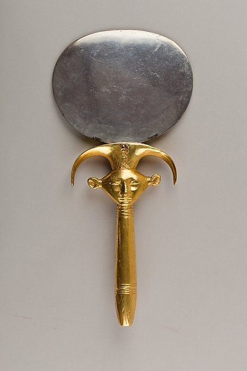
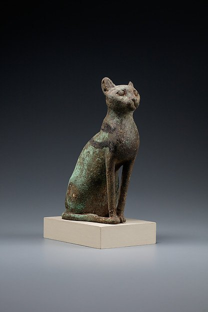
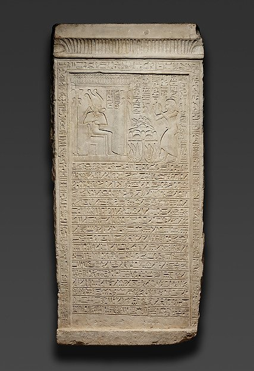
Religião e mitologia: o cosmos egípcio
A religião egípcia era politeísta e henoteísta — os egípcios cultuavam centenas de deuses, mas frequentemente privilegiavam um deus particular sem negar a existência dos outros. A centralidade do culto solar reflete a própria geografia: o sol (Rê) era a fonte de vida, luz e calor, simbolizando a renovação diária da création e o poder divino do faraó (Hornung, 1999, pp. 25-31).
A criação e os deuses primordiais
A cosmogonia egípcia conhecia pelo menos três versões principais: a heliopolitana (centro em Heliópolis, com Atum como criador), a memfita (centro em Mênfis, com Ptah criador pela palavra) e a tebana (centro em Tebas, com Amon como deus oculto que se fundiu com Rê, tornando-se Amon-Rê, rei dos Deuses). Na tradição heliopolitana, Atum emergiu das águas primordiais (Nu) por ato de vontade, e de sua masturbação ou sopro surgiram Shum (ar) e Tefnut (umidade), que por sua vez geraram Geb (terra) e Nut (céu) — os quatro elementos do cosmos (Hornung, 1999, pp. 55-60).
Os deuses principais
- Rê (ou Amon-Rê): deus solar, criador e rei dos deuses. Seu templo em Karnak era o centro político e religioso do Novo Reino, onde o “casamento sagrado” entre o deus e a rainha renovava anualmente a legitimidade do faraó.
- Osíris: deus da fertilidade, da vegetação e do julgamento dos mortos. Assassinado pelo irmão Set (Seth), foi reconstituído por Ísis e concebeu com ela o filho Hórus, que vingou o pai. Tornou-se o deus dos mortos e do renascimento, presidindo o tribunal do além.
- Ísis: deusa da magia, da maternidade e da fertilidade; esposa de Osíris e mãe de Hórus. Seu culto se espalhou pelo Mediterrâneo helênico, fundindo-se com Afrodite e Deméter.
- Hórus: deus-falcão, filho de Osíris e Ísis; protetor do faraó vivo. Seus olhos eram o sol (direita) e a lua (esquerda), e o “olho de Hórus” (wedjat) era um poderoso amuleto de proteção.
- Anúbis: deus dos mortos e da mumificação; cão ou chacal que guiava os mortos e presidia a “pesagem da alma” (psychostasia) perante o tribunal de Osíris.
- Ma’at: deusa da verdade, da justiça e da ordem cósmica. Filha de Rê, era representada por uma mulher com uma pluma de avestruz na cabeça. A manutenção da Ma’at pelo faraó era o dever fundamental da realeza — e a garantia da continuidade da création.
A vida após a morte: mumificação e julgamento
A crença na vida após a morte era o eixo da religião egípcia. Os egípcios acreditavam que a pessoa era composta de elementos múltiplos: o ka (essência vital, alma), o ba (personalidade, representado por uma cabeça de pássaro humano), o akh (a união de ka e ba no além), o shut (a sombra) e o ren (o nome — a existência dependia da pronúncia contínua do nome do falecido, o que leva à importância da escrita funerária). Ao morrer, o ba viajava para o Duat (submundo), onde enfrentava provações, passava pelo julgamento de Osíris e, se justificado, atingia o Campo de Juncos (Sekhet-Aaru), uma imagem espelhada da vida eterna nas margens do Nilo (Hornung, 1999, pp. 75-85).
A mumificação foi o método de preservação do corpo (sah), necessário para o ba ter um corpo ao qual retornar. O processo, descrito por Heródoto (Histórias, II, 86-88), envolvia a remoção do cérebro pelo nariz com instrumentos de bronze, a evisceração (exceto o coração, que era pesado na balança do julgamento), o tratamento do corpo com natrão (carbonato de sódio) por 70 dias, a aplicação de resinas e a envoltura em bandagens de linho com amuletos protetores de pedra e ouro. A complexidade do ritual variava conforme a posição social: desde a mumificação de luxo dos faraós até o simples abandono no deserto para os mais pobres.
Textos religiosos e funerários
Os principais textos religiosos egípcios, compilados em diferentes períodos, ilustram a teologia e a prática ritual:
- Textos das Pirâmides (Antigo Reino, 2350-2100 a.C.): inscrições nas paredes das câmaras funerárias das pirâmides dos faraós da 5ª e 6ª dinastias (Unas, Teti, Pepi I, Merenre, Pepi II). Contêm encantamentos para a ascensão do faraó ao céu e sua identificação com as estrelas e os deuses. Exemplo: “O céu chove, as estrelas escurecem, os arcos celestes se curvam, os ossos da terra tremem… quando o rei navega no barco de Rê” (Faulkner, 1990, p. 63).
- Livro dos Mortos (Novo Reino, 1550-1070 a.C.): coleção de feitiços (* pertem hru* = “librações para o dia que vem”) escritas em papiro, colocadas na tumba para guiar o falecido no além. O capítulo 125 descreve o julgamento perante Osíris: “Meu coração é equilibrado, minha balança é verdadeira… não cometi transgressões” (Faulkner, 1990, pp. 25-28).
- Amduat (“O que há no submundo”, Novo Reino): texto funerário dos faraós da 18ª-20ª dinastias, descrevendo a jornada noturna de Rê pelo Duat e sua renovação ao amanhecer.
Os hinos ao sol
Os textos literários egípcios mais antigos são os “Hinos ao Sol” de Heliópolis, especialmente o “Grande Hino a Atum” composto durante o Novo Reino, que expressa a teologia da criação pela palavra divina: “Aquilo que era proferido pela boca de Atum e veio a existir: o céu, a terra, os rios, as águas…” (Hornung, 1999, p. 66). Esses textos cerimoniais recitados nos templos, onde os sacerdotes ofereciam alimentos e incensos aos deuses em estátuas rituais, estabeleciam a ligação entre a comunidade humana e o mundo divino (Teeter, 2011, pp. 30-38).
Cosmogonia: as tradições concorrentes da criação
A cosmogonia egípcia não constitui um sistema único, mas um conjunto de tradições paralelas, cada uma vinculada a um centro sacerdotal que reivindicava para o seu deus local a primazia da criação (Redford, 2001, vol. 2, pp. 469-472). Essas versões não eram sentidas como contraditórias: o que estava em jogo não era a reconstituição de um evento singular, mas a enunciação de uma verdade sobre a ordem do mundo, e cada tradição podia ser verdadeira no contexto do culto que a formulava (Assmann, 2001, pp. 55-70).
A tradição hermopolitana, originária de Khemnu (“Cidade dos Oito”), postulava uma Ogdóade de oito divindades primordiais — quatro deuses com cabeça de rã e suas contrapartes femininas com cabeça de serpente — que personificavam os aspectos do caos aquoso anterior à criação: Nun e Naunet (as águas primordiais), Heh e Hauhet (a infinidade), Kek e Kauket (as trevas) e Amun e Amaunet (o oculto) (Hornung, 1999, pp. 55-58). Desse estado indiferenciado procederiam o ovo cósmico ou o lótus de cujo seio nasceria o deus solar criança — motivo que reaparece, no Novo Reino, em estatuetas de Tutankhamon representado como sol recém-nascido sobre uma flor de lótus.
A tradição heliopolitana, atestada já nos Textos das Pirâmides, organiza-se em torno da Enéade de Iunu (Heliópolis), o “Colégio dos Nove”, presidida por Atum, deus autogerado que emerge da Nun sob a forma da pedra benben, o montículo primordial. Atum cria sem par: Shu (o ar) e Tefnut (a umidade) nascem de seu sopro ou de suas secreções; estes geram Geb (a terra) e Nut (o céu); e da união de Geb e Nut nascem Osíris, Ísis, Set e Néftis, terceira geração da Enéade, à qual se acrescenta Hórus, filho de Osíris e Ísis (Allen, 2005, pp. 7-20). A iconografia egípcia do cosmos é inseparável dessa genealogia: Shu, erguendo os braços, separa o corpo arqueado de Nut do corpo estendido de Geb — gesto fixado nas vinhetas do Livro dos Mortos e nas tampas de sarcófago, onde Nut, coberta de estrelas, protege o falecido com as asas abertas.
A tradição memfita, preservada na chamada Teologia de Mênfis (Pedra de Xabaca), distingue-se por sua formulação intelectual: Ptah, deus dos artesãos e patrono da capital, não cria por emissão corporal, mas pelo pensamento (o coração) e pela palavra (a língua). O texto — cuja cópia sobrevivente foi mandada inscrever pelo faraó núbio Xabaca, da 25ª dinastia, a partir de um papiro deteriorado, mas cujo conteúdo remonta provavelmente ao Antigo Império — declara: “A visão, a audição, a respiração: elas informam ao coração, e ele faz com que toda compreensão se manifeste. Quanto à língua, ela repete o que o coração concebeu. Assim nasceram todos os deuses e sua Enéade se completou” (Lichtheim, 1973, vol. 1, pp. 51-57). A criação pela palavra divina teria longa descendência na reflexão religiosa posterior, egípcia e helenística (Hornung, 1999, pp. 58-62).
A tradição tebana é a mais tardia e a mais ambiciosa. Quando Tebas se converteu em capital do Império, seus teólogos promoveram Amun — o “oculto” da Ogdóade hermopolitana — à condição de deus universal, fundindo-o ao sol sob o nome de Amun-Rê, “rei dos deuses”, e apresentando-o como criador dos deuses, dos homens e dos nomes (Redford, 2001, vol. 1, pp. 82-85). A reunião dessas tradições num mesmo panteão, sem exclusão mútua, corresponde ao que Assmann descreveu como uma teologia da “unicidade plural”: qualquer deus podia, no interior de seu culto, ser louvado como o único e o primeiro, sem que isso implicasse a negação dos outros (Assmann, 2001, pp. 10-25).
O panteão: agrupamentos, formas e sincretismo
O panteão egípcio é numérica e estruturalmente aberto: os textos e a epigrafia permitem identificar cerca de mil e quinhentas divindades nomeadas, das quais pouco mais de uma centena recebia culto regular em templos de grande porte (Redford, 2001, vol. 2, pp. 469-472). Os deuses organizavam-se em agrupamentos funcionais e locais — a Enéade heliopolitana, a Ogdóade hermopolitana, as tríades das grandes cidades (Ptah-Sekhmet-Nefertem em Mênfis; Amun-Mut-Khonsu em Tebas; Osíris-Ísis-Hórus em Abidos) — e essa estruturação não é meramente classificatória: ela reproduz, no plano divino, o modelo da família e do Estado, legitimando a realeza e a ordem social (Hornung, 1999, pp. 62-70).
Quanto à forma, os egípcios concebiam a divindade como essencialmente invisível e ilimitada, manifesta sob aparências variáveis: a forma humana (Ptah, Osíris, Amun), a forma animal (o chacal de Anúbis, o ibis de Thoth, o gato de Bastet, o crocodilo de Sobek), a forma híbrida (Hórus falcocefálico, Hathor com orelhas bovinas) e a forma puramente simbólica (o disco solar do Aten, a pluma de Ma’at). Um mesmo deus podia ser representado por animais distintos em diferentes nomos, e os animais sacralizados — particularmente os touros Ápis e Mnevis e os falcões de Edfu — funcionavam como suportes vivos da presença divina. Por sincretismo, divindades afins podiam ser combinadas em nome duplo (Amun-Rê, Rê-Atum, Ptah-Sokar-Osíris, Sobek-Rê), procedimento que não confundia os deuses, mas os acumulava, permitindo invocar num só nome a soma de seus poderes (Hornung, 1999, pp. 70-78).
A experiência religiosa não se esgotava, contudo, no culto oficial. A documentação de Deir el-Medina, a vila dos construtores das tumbas reais, e as milhares de estelas votivas do Novo Reino revelam uma piedade pessoal intensa: orações individuais, ex-votos, consultas a oráculos divinos em procissões, fórmulas contra picadas de escorpião, divindades domésticas (Bes, Tauaret) e amuletos protetores de faiança usados em vida e depositados na tumba (Teeter, 2011, pp. 61-78).
O culto: o templo como cosmo e o ritual diário
O templo egípcio não era um local de reunião de fiéis, mas a casa do deus (hut-neter) — um microcosmo construído explicitamente como reedição do ato criador. O pilone de entrada imita o hieróglifo de “horizonte” (akhet), os obeliscos diante dele remetem ao benben primordial, os capitéis papiriformes e lotiformes ecoam a vegetação do montículo primevo, e o santuário escuro e recuado, no fundo do eixo processional, representa o próprio montículo da criação (Teeter, 2011, pp. 45-60). Atravessar um templo era, literalmente, refazer a topografia do primeiro dia.
No coração desse espaço, um culto diário de oferendas mantinha a vida do deus e, com ela, a do cosmos. As fontes que o documentam são as cenas com inscrições do templo de Seti I em Abidos (c. 1290-1279 a.C.) e os papiros hieráticos de Berlim 3014, 3053 e 3055, que registram a liturgia de Amun e Mut em Karnak (c. 945-800 a.C.). O oficiante — teoricamente o rei, na prática um sacerdote hem-neter como seu substituto — iniciava o rito queimando incenso, rompia o selo e desatava a corda do santuário, prostrava-se e entoava hinos com os braços erguidos, oferecia alimento, bebida, incenso e óleo perfumado, apresentava a deusa Ma’at ao deus (oferta central do rito, que reafirma a ordem sobre o caos), revestia a estátua com quatro peças de linho nomeadas, aplicava a pintura dos olhos em cobre e chumbo, e então se retirava varrendo as próprias pegadas, oferecendo natron, incenso e água antes de fechar novamente o santuário (Teeter, 2011, pp. 30-44). A imagem cultual não era considerada deus ela mesma: era um suporte visível e tangível para as oferendas e o serviço humanos, e só se tornava canal válido após o ritual de abertura da boca, que a “animava” (Teeter, 2011, pp. 44-52).
Os ritos de contato com o sagrado obedeciam a um código de pureza rigoroso — depilação, vestes de linho, banhos purificatórios, tabus alimentares e o uso obrigatório da inscrição uesekh (“puro”) — e a hierarquia sacerdotal distinguia vários graus: o sumo sacerdote, os “pais divinos” (it-neter), os leitores-ritualistas (heri-heb) e as sacerdotisas cantoras, como a Cantora de Amun Nauny, cujo Livro dos Mortos aparece entre as peças desta seção. Ao serviço diário acrescentavam-se as grandes festas públicas, ocasiões em que a estátua divina saía em procissão e o acesso ao sagrado se ampliava: a festa de Opet, em que Amun visitava Luxor; a Bela Festa do Vale, em que os vivos visitavam as necrópoles levando oferendas aos mortos; e o ano novo (Wepet-Renpet), que celebrava a renovação do ciclo agrícola e cósmico (Teeter, 2011, pp. 78-96).
A vida após a morte: julgamento, transformação e equipamento funerário
Se os templos cuidavam de manter o cosmos em funcionamento, a religião funerária tratava de assegurar que o indivíduo continuasse a participar dele. O ser humano não era pensado como uma unidade simples, mas como um agregado de componentes: o khet (corpo físico), o sah (corpo transfigurado pela mumificação), o ka (princípio vital, com o qual os mortos “comem” e “bebem”), o ba (a individualidade ativa, que pode deslocar-se entre o mundo dos vivos e o Duat), o akh (o estado glorificado resultante da união de ka e ba no além), o ib (o coração, sede do pensamento e da memória moral), o ren (o nome) e o shut (a sombra) (Taylor, 2004, pp. 12-30). A morte não suprimia nenhum desses elementos: reorganizava-os, e o conjunto do ritual funerário tinha por objetivo impedir a sua dissolução.
Esse processo culminava no julgamento. O capítulo 125 do Livro dos Mortos descreve a cena que a iconografia egípcia tornou canônica: o falecido, conduzido por Anúbis, comparece à “Sala das Duas Verdades” diante de Osíris e dos quarenta e dois assessores de Ma’at, e recita as chamadas confissões negativas — quarenta e duas declarações de inocência, cada uma dirigida a um juiz nomeado e ao pecado específico de que tem competência (Faulkner, 1990, pp. 25-35). Em seguida, o coração do morto é posto numa balança e pesado contra a pluma de Ma’at, sob a supervisão de Anúbis e o registro de Thoth, escriba dos deuses. Se os pratos se equilibram, o falecido é declarado maa-kheru, “verdadeiro de voz” — justificado — e pode seguir para a existência eterna; se o coração é mais pesado, ele é devorado pela Ammit, “a Devoradora”, entidade híbrida com cabeça de crocodilo, tronco de leão e traseiro de hipopótamo, e a pessoa sofre a segunda morte, o aniquilamento (Faulkner, 1990, pp. 30-35). Não é por acaso que esse capítulo seja o mais frequentemente copiado e ilustrado: ele é o único trecho do corpus funerário com conteúdo explicitamente ético, e converte a ordem cósmica de Ma’at em norma de conduta cotidiana (Assmann, 2001, pp. 60-75).
Ao lado do julgamento, a geografia do além e as técnicas de sobrevivência foram-se diversificando ao longo do tempo. Os Textos das Pirâmides (Antigo Reino) dirigiam-se exclusivamente ao faraó, cuja ascensão ao céu, identificado com as estrelas imperecíveis, é descrita em linguagem cósmica e violenta (Allen, 2005, pp. 7-27). Os Textos dos Sarcófagos (Reino Médio) democratizaram esse acervo, transpondo-o para os sarcófagos da elite e transformando a jornada celeste numa travessia pelos caminhos do Duat. O Amduat (“O que está no submundo”), o Livro das Portas e o Livro das Cavernas (Novo Reino) dividem a noite em doze horas e relatam a viagem de Rê pelo mundo inferior, onde ele se une a Osíris antes de renascer ao amanhecer — modelo que o morto justificado é convidado a repetir (Hornung, 1999, pp. 78-88). O Livro dos Mortos — cujo título egípcio, pert em hru, significa “a saída para a luz do dia” — reúne num papiro individualizado, comprado ou encomendado pelo próprio falecido, os feitiços que lhe permitem sair e entrar, navegar, vencer serpentes e demônios, conhecer os nomes secretos das divindades e superar o tribunal (Faulkner, 1990, pp. 11-24).
O equipamento funerário materializa esse programa. A mumificação, descrita por Heródoto (Histórias, II, 86-88), preserva o sah — mas sua eficácia depende de uma cadeia de gestos rituais: a evisceração e a desidratação com natrão ao longo de setenta dias, a unção com resinas, o enfaixamento com amuletos intercalados, a máscara dourada, a colocação do coração-escaravelho, e a inclusão de amuletos cujo valor não é decorativo, mas performativo: o wedjat, olho de Hórus restaurado por Thoth, assegura integridade e saúde; o escaravelho do coração impede que ele testemunhe contra o morto no tribunal; o pilar djed confere estabilidade; o nó de Ísis (tyet) protege o sangue e a magia da deusa (Ikram & Dodson, 1998, pp. 108-135).
Dentro da tumba, os shabtis — estatuetas de faiança, madeira ou cera, inscritas com o feitiço 6 do Livro dos Mortos — respondiam pelo trabalho agrícola que o falecido deveria prestar na economia do além: “Ó shabti, se eu for convocado, se eu for designado para fazer qualquer trabalho que se faça lá no além… fala tu: ‘eu o farei’.” Depositados em caixas de madeira, vasos ou dispostos em fileiras na câmara funerária, multiplicavam-se ao longo dos séculos até constituírem, no Período Tardio, verdadeiros exércitos de servidores de um por dia do ano (Ikram & Dodson, 1998, pp. 121-127). O destino final do justificado varia conforme a tradição: o céu estrelado, o séquito de Rê em sua barca, a união com Osíris, ou os Campos de Iaru (“Campos de Juncos”), paisagem espelhada do Egito fértil onde se repete a vida das margens do Nilo — em todos os casos, uma existência continuada, social e corporal, e não uma imaterialidade pura (Assmann, 2001, pp. 75-90).
Aten e a exceção amarniana
Um capítulo à parte é a reforma de Akhenaton (c. 1353-1336 a.C.). Ao elevar o Aten — o disco solar cujos raios terminam em mãos — à condição de divindade praticamente exclusiva, suprimindo o plural “deuses” nos textos oficiais e transferindo a capital para Akhetaton (Tell el-Amarna), o faraó rompeu com a tradição cultual que descrevemos. O Grande Hino ao Aten, composto nesse período, celebra o deus único como criador de todas as terras e de todos os seres: “Quão numerosas são as tuas obras, ainda que ocultas à vista; deus único, não há outro ao teu lado.” Os estudiosos há muito notaram a semelhança de certas formulações com o Salmo 104, sem que isso implique dependência direta (Lichtheim, 1973, vol. 2, pp. 96-100). Se essa reforma constitui um monoteísmo avant la lettre, um henoteísmo radical ou apenas uma exacerbação do culto solar, continua objeto de debate; sua reversão após a morte de Akhenaton demonstra, no entanto, a solidez do modelo politeísta e descentralizado que a religião egípcia havia desenvolvido ao longo de dois milênios (Assmann, 2001, pp. 195-220).
As peças desta seção
Os objetos reunidos nestas páginas não ilustram a religião egípcia de fora: eles são instrumentos dela. O papiro do Livro dos Mortos da Cantora de Amun Nauny (21ª dinastia, c. 1040-992 a.C.) é um exemplar individualizado do corpus funerário, cujas vinhetas configuram visualmente o tribunal de Osíris; o papiro de Khamhor (período ptolomaico, c. 300-250 a.C.) demonstra a permanência de mil anos desse formato, com a cena da pesagem do coração contra a pluma de Ma’at; o amuleto wedjat (c. 1080-664 a.C.) materializa a economia da reparação e da integridade corporal que o mito de Hórus e Set fundamenta; a figura osiride de madeira, com os braços cruzados e o corpo envolvido em bandagens, reproduz a postura do deus que venceu a morte; e o shabti de cera sobre madeira (c. 2124-1981 a.C.), com a caixa que o guardava, atesta a insistência egípcia em converter a vida após a morte numa continuidade de trabalho, de obrigação e — por fim — de repouso (Faulkner, 1990, pp. 11-24; Ikram & Dodson, 1998, pp. 121-127).
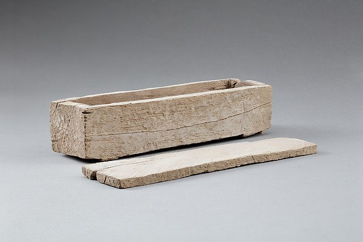
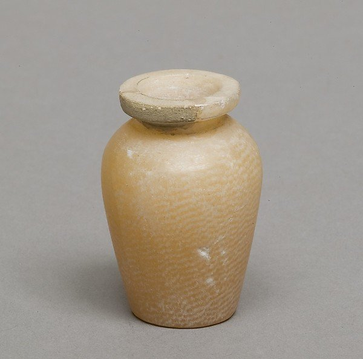
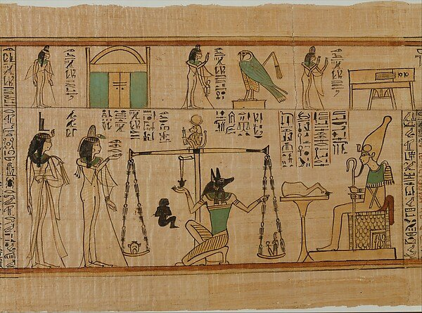
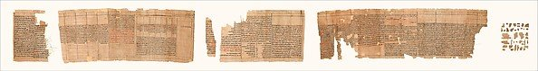
Arte e arquitetura: a monumentalidade do sagrado
A arte egípcia era primeiramente funcional — servia à religião e à perpetuação da memória — mas também era profundamente simbólica e conservadora em suas convenções. Os campos estilísticos são: pirâmides (tumbas reais), templos (casas dos deuses), esculturas, relevos e pintura mural, joalheria, mobiliário funerário e arte em papiro. A arte monumental era coletiva, produzida por oficinas anônimas de artesãos especializados suborditos a sacerdotes e arquitetos reais (Teeter, 2011, pp. 12-20).
As Pirâmides: arquitetura funerária
As pirâmides representam o ápice da arquitetura funerária egípcia, culminando na mescla de técnica, planejamento e poder estatal. A pirâmide mais antiga é a Pirâmide de Djoser (ou Pirâmide de Degraus) em Saqqara, projetada pelo arquiteto Imhotep para o faraó Djoser da 3ª dinastia (c. 2670 a.C.) — uma estrutura em seis degraus que evoluiu de uma mastaba tradicional e inaugurou a técnica de construção em pedra (Wilkinson, 1999, pp. 88-90). O complexo funerário de Djoser, com seus pátios, colunas e capelas decoradas em relevo, dominou o horizonte funerário do Antigo Reino.
A pirâmide não surgiu como forma acabada: sua genealogia remonta às mastabas — tumbas retangulares de tijolo e pedra que cobriam câmaras subterrâneas — erguidas nas necrópoles de Abidos e Saqqara desde o Dinástico Inicial. Diante do recinto muralhado de Khasekhemwy em Abidos, com suas fachadas em nichos, Imhotep tomou a decisão que inauguraria uma tradição: empilhou seis mastabas, cada uma menor que a inferior, criando simultaneamente a primeira pirâmide de degraus e o primeiro grande edifício em pedra lavrada do mundo. O complexo de Saqqara não era um túmulo isolado, mas uma cidade ritual em miniatura — muro de recinto com portas falsas, colunata de entrada, pátio sul para o festival heb-sed, templos do norte e do sul e o serdab, câmara fechada onde a estátua do ka do rei recebia oferendas por uma fenda na parede. Entre as inovações que ali se consolidaram estão a separação entre edifícios funcionais e edifícios “falsos” (não utilizáveis) e a articulação, num único conjunto, das funções mortuárias e rituais (Smithsonian Institution, 2005; Smarthistory, 2021). A transição da pirâmide de degraus para a pirâmide de faces lisas ocorreu sob Snefru, fundador da 4ª dinastia: em Meidum, a estrutura escalonada foi preenchida com pedra e revestida de calcário; em Dahshur, a chamada Pirâmide Curvada teve o ângulo de inclinação reduzido de mais de 51° para cerca de 43° no meio da construção, mudança provavelmente ditada pela estabilidade estrutural; e a Pirâmide Vermelha, com faces a pouco mais de 43°, foi a primeira pirâmide verdadeira e de proporções regulares. Só então, com a técnica e o repertório formal já estabilizados, a 4ª dinastia pôde erguer em Gizé os monumentos que condensam a própria ideia de Antigo Reino (Smithsonian Institution, 2005).
Além da escala, os conjuntos piramidais eram complexos funcionais integrados: à pirâmide principal associavam-se templo mortuário, calçada processional, templo de vale e tumbas subsidiárias, e os restos de barcos funerários escavados em Gizé atestam a dimensão simbólica da jornada solar do rei. O Templo de Vale de Khafre, revestido de granito e com piso de calcita branca polida, guardava originalmente dezenas de estátuas régias em tamanho natural ou maior; sob seu piso foi encontrada a célebre estátua de Khafre em gnaisse, sentado num trono de leão cujas laterais exibem as plantas heráldicas do Alto e do Baixo Egito — papiro e lótus — atadas a um hieróglifo de “estabilidade”: o emblema sema-tawy (“unir as Duas Terras”), que condensa em pedra o dever primordial do faraó de manter o país unificado sob um único soberano (Smithsonian Institution, 2005; Smarthistory, 2021).
O refinamento da técnica leva às pirâmides do complexo de Gizé, construídas durante a 4ª dinastia (c. 2613-2494 a.C.):
- Pirâmide de Khufu (Quéops, c. 2589-2566 a.C.): a maior, com 146,6 m de altura original (até 138,8 m hoje), consistindo de aproximadamente 2,3 milhões de blocos de calcário com peso médio de 2,5 toneladas. Sua orientação para os pontos cardeais é precisa, com erro inferior a 3/4 de arco-minuto (Wilkinson, 1999, p. 95).
- Pirâmide de Khafre (Quéfren, c. 2558-2532 a.C.): um pouco menor (143,5 m), mas construída em terreno mais alto, dando a impressão de ser a maior. Junto ao complexo, foi erguida a Grandesfinge — uma escultura colosal com corpo de leão e cabeça humana (provavelmente Khafre), medindo 73 m de comprimento e 20 m de altura.
- Pirâmide de Menkaure (Miquerinos, c. 2532-2503 a.C.): a menor das três (65 m), revestida parcialmente de granito vermelho de Assuão.
A construção das pirâmides envolveu uma mão de obra estimada em 20-30 mil trabalhadores sazonais (principalmente camponeses durante a inundação, quando a agricultura era impossível), organizados em equipes especializadas e aprovadas por arquitetos reais — um empreendimento que reflete a capacidade de mobilização do Estado egípcio (Kemp, 2006, pp. 168-175).
A logística dessa escala supõe um Estado capaz de alimentar, alojar e remunerar milhares de pessoas. As escavações da “Cidade dos Construtores” ao sul do planalto de Gizé revelaram dormitórios, padarias e cozinhas capazes de produzir pão e cerveja em massa — indício consistente de mão de obra remunerada, e não escrava, organizada em equipes (gangs) com nomes próprios e divisões (phyles) que se revezavam em turnos. Os materiais vinham de longe: o calcário comum, das próprias pedreiras do planalto; o revestimento fino, de Tura, do outro lado do Nilo; o granito das câmaras e de parte do revestimento, de Assuão, a centenas de quilômetros ao sul. Sobre as faces dos blocos, arqueólogos encontraram marcas de pedreiros registrando nomes de equipes, como “equipe dos artesãos”, o que documenta diretamente a organização do trabalho. Heródoto registrou, com base no que lhe disseram guias egípcios no século V a.C., que 100 mil homens teriam trabalhado três meses por ano durante vinte anos na Grande Pirâmide; as estimativas modernas são muito menores, na ordem de alguns milhares de artesãos permanentes complementados por trabalhadores sazonais durante a inundação (Smithsonian Institution, 2005). O transporte apoiava-se em trenós deslizados sobre pistas umedecidas com líquido — cena documentada numa pintura de tumba que mostra o deslocamento de uma estátua colossal — e em rampas que elevavam os blocos à medida que a obra subia; o revestimento era acabado de cima para baixo e as rampas, desmontadas conforme o avanço (Smithsonian Institution, 2005). Terminada a pirâmide, restava ao faraó um paradoxo que o próprio Egito reconheceu: por mais maciças que fossem, as tumbas eram alvos óbvios de saqueadores, e foi essa vulnerabilidade que levou os reis posteriores a abandonar a pirâmide em favor de hipogeus escavados na rocha (Smithsonian Institution, 2005).
Templos: Karnak, Luxor e Abu Simbel
Os templos egípcios eram “casas dos deuses” (hut-neter), concebidos como microcosmos e espaços de ritual contínuo. O complexo de Karnak, em Tebas, é o maior conjunto de templos do mundo — com mais de 100 hectares, contendo dezenas de templos, santuários, pátios e obeliscos erguidos ao longo de 1.500 anos. O Templo de Amon-Rê, no centro do complexo, tem uma Sala Hipóstila com 134 colunas gigantescas (23 m de altura por 10 m de diâmetro na nave central), que é uma das mais impressionantes realizações arquitetônicas da história (Teeter, 2011, pp. 45-50).
Mais do que a casa de um deus, o templo egípcio era um modelo do cosmos. Karnak era conhecido em egípcio como Ipet-isut, “o Mais Seletos dos Lugares”, e funcionava simultaneamente como morada do deus, palco do ritual diário e grande propriedade agrícola, com lagoa sagrada, cozinhas e oficinas dedicadas à produção de objetos rituais. A planta reproduzia deliberadamente o zep tepi, “a primeira vez” — o instante da criação: os pilones, os grandes portais monumentais, figuravam o horizonte; o piso elevava-se progressivamente à medida que se avançava para o interior, como o monte primordial emergindo das águas de Nun; as colunas tomavam a forma de lótus, papiro e palmeira, aludindo ao pântano da criação; e o teto, decorado com estrelas e aves, representava o céu. O próprio sítio, próximo ao Nilo, era na cheia invadido pelas águas, o que prolongava a metáfora do caos primevo (Smarthistory, 2021). A Sala Hipóstila (c. 1250 a.C.), erguida no período raméssida, reúne 134 colunas de arenito, das quais as doze centrais alcançam cerca de 21 metros de altura — a diferença de nível entre a nave central e as alas laterais criava uma abertura superior para a entrada de luz e ar, o clerestório, cujo testemunho mais antigo conhecido provém justamente do Egito. Toda a decoração era pintada em cores vivas, das quais ainda sobrevivem vestígios nos trechos superiores das colunas e do teto. O acesso à escuridão interior era graduado: quanto mais se adentrava o santuário, tanto mais restrito se tornava o círculo de pessoas autorizadas, de modo que a própria arquitetura encenava a hierarquia entre o mundo profano e o recôndito divino (Smarthistory, 2021). A esse repertório somavam-se os obeliscos: o mais alto do Egito, de um único bloco de granito vermelho, foi dedicado por Hatshepsut, e seu par original chegou a ser transportado e reerguido em Roma, testemunhando a apropriação posterior do vocabulário monumental egípcio (Smarthistory, 2021).
Durante o Novo Reino, o faraó Ramsés II (c. 1279-1213 a.C.) encomendou a Abu Simbel, num dos feitos mais espetaculares da engenharia egípcia: dois templos escavados na rocha, com estátuas colossais de 20 m de altura representando o faraó sentado. O Templo Grande de Abu Simbel foi projetado de modo que, nos dias 21 de outubro e 21 de ferreiro — datas que correspondem à coroação e ao nascimento de Ramsés II — os raios do sol nascente penetram pelo corredor do templo e iluminam as estátuas do santuário, revelando a simbiose entre a astronomia e a realeza divina (Wilkinson, 1999, p. 154).
Outro marco do Novo Reino é o templo funerário de Hatshepsut em Deir el-Bahari, projetado pelo arquiteto Senenmut em terraços que se erguem contra a face do desfiladeiro de Tebas, numa simbiose deliberada entre pedra lavrada e rocha viva: o paredão de rocha, com sua permanência e sua estabilidade, expressa visualmente a ordem que a faraó e sua dinastia buscavam reafirmar no início do Novo Reino, após os anos de divisão do Segundo Período Intermediário. O programa escultórico do templo incluía esfinges que ladeavam o pátio inferior e um conjunto de estátuas ajoelhadas de oferenda em granito, nas quais Hatshepsut — frequentemente representada com os atributos masculinos da realeza — apropria-se da iconografia do faraó para legitimar seu governo como mulher que assumiu os títulos de rei (Smarthistory, 2021). O caso é exemplar de como a arte egípcia não era apenas decoração, mas instrumento de poder: a escultura, a arquitetura e a imagem real formavam um único dispositivo de afirmação da legitimidade dinástica.
Escultura e pintura
A escultura egípcia obedecia a convenções estritas: o corpo era representado com ombros frontais, cabeça e pernas de perfil, e os personagens apareciam em pé, sentados ou ajoelhados, com expressões impassíveis e sempre jovens e saudáveis — refletindo a ideologia da eternidade e da perfeição divina (Teeter, 2011, pp. 55-60). A pintura mural, por sua vez, seguia a “lei da frontalidade”: o rosto em perfil, o olho frontal, os ombros frontais. As cores eram simbólicas: o verde (vida e renascimento), o azul (céu e Nilo), o dourado (carne dos deuses), o vermelho (deserto e set, o caos).
A escultura: forma, gênero e escala
Além das convenções de pose, a escultura egípcia desenvolveu gêneros formais recorrentes. As estátuas-bloco (block statues), em que o corpo do retratado aparece envolto num manto cúbico do qual emergem apenas a cabeça e os pés, difundiram-se sobretudo a partir do Reino Médio e no Novo Império: ao reduzir a figura a um monólito, o gênero associava o indivíduo à permanência da pedra e à estabilidade do sagrado, e servia tanto a altos funcionários quanto a membros da realeza. No extremo oposto da escala está o colosso: a Grande Esfinge de Gizé, com cerca de 73 m de comprimento e 20 m de altura, é a primeira escultura verdadeiramente colossal da história egípcia, e sua posição junto à calçada que ligava o templo de vale ao templo mortuário de Khafre é o principal indício de que foi esculpida para esse faraó (c. 2520-2494 a.C.), a partir de um afloramento rochoso do próprio planalto (National Geographic; Smarthistory, 2021). Nos templos e nas tumbas, o repertório material da escultura ia muito além da pedra: estatuetas votivas, amuletos e figuras de divindades em bronze, faiança e madeira foram produzidos em quantidade quase industrial, sobretudo no Período Tardio, para alimentar tanto o culto nos templos quanto as práticas funerárias e mágicas dos particulares (The Metropolitan Museum of Art, 2021).
A pintura mural: técnica e programa
A pintura mural egípcia não era afresco no sentido europeu: os artistas empregavam a técnica a secco, aplicando os pigmentos sobre o gesso já seco, com um aglutinante — frequentemente goma arábica — que fixava a cor à superfície. As tintas eram, em sua maioria, minerais recolhidos ou extraídos da terra e moídos até virar pó fino: ocre vermelho, ocre amarelo, malaquita para o verde, orpimenta, negro de fuligem e calcite para o branco. O azul constituía uma exceção notável, pois não existia na natureza em forma adequada: os egípcios o sintetizavam aquecendo a alta temperatura uma mistura de areia, cal, carbonato de sódio e um composto de cobre, obtendo o chamado “azul egípcio” — o primeiro pigmento azul sintético conhecido na história. A execução seguia uma sequência padronizada: alisava-se a superfície (em madeira, aplicando primeiro uma camada de linho e depois o gesso de gipsita com cola), definia-se a composição por uma grade de quadrículas proporcionais, desenhavam-se os contornos em vermelho ou negro e só então preenchiam-se as cores, uma a uma — o que explica a coerência e a regularidade das cenas entre paredes e até entre monumentos distintos (The Metropolitan Museum of Art, 2021). Na capela funerária de Raemkai (c. 2460 a.C.), reconstruída no Metropolitan Museum, essa gramática aparece em pleno funcionamento: as paredes leste e oeste combinam cenas de oferendas com a vida cotidiana do morto — agricultura, caça e pesca —, articulando a existência terrena e a economia do além num mesmo programa iconográfico (The Metropolitan Museum of Art, 2021). Museus e escavações conservam ainda paletas de pintor, como a de marfim inscrita com o nome de Amenhotep III, nas quais restam os torrões de tinta azul, verde, marrom, amarelo, vermelho e preto usados há mais de três mil anos. O essencial desse repertório — proporção codificada, frontalidade, cor simbólica e função ritual — permaneceu estável por mais de três milênios, alterando-se sobretudo na ênfase: o naturalismo efêmero da fase amarniana, sob Akhenaten, e a elegância alongada do período raméssida são variações de superfície sobre uma convenção que nunca foi abandonada (The Metropolitan Museum of Art, 2021).
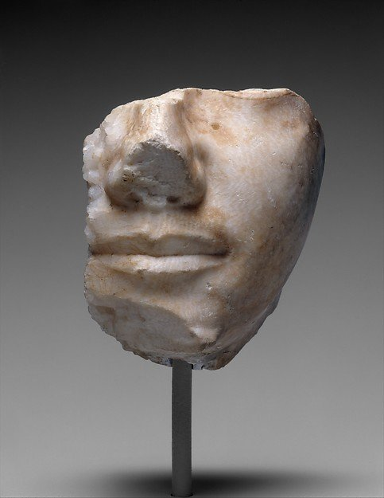
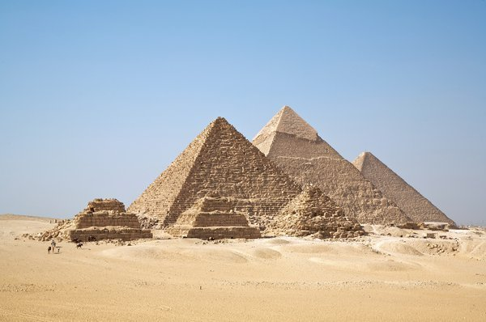
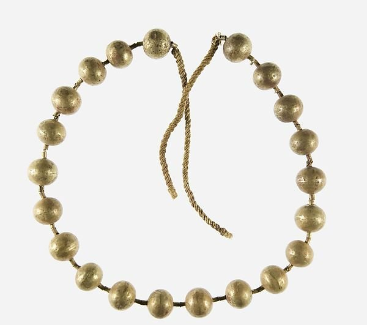
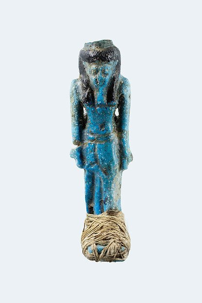
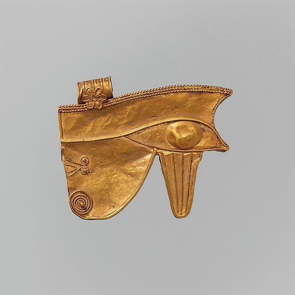
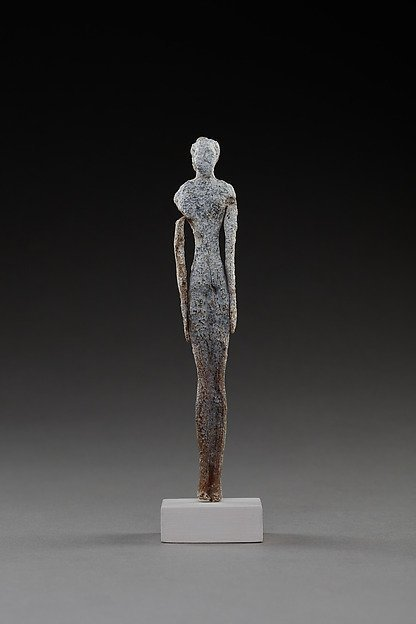
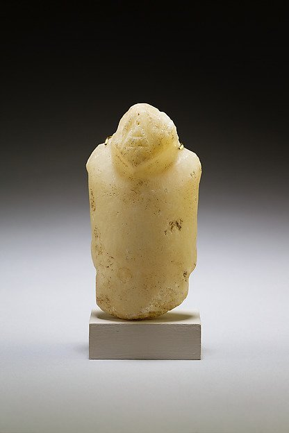
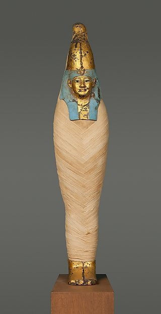
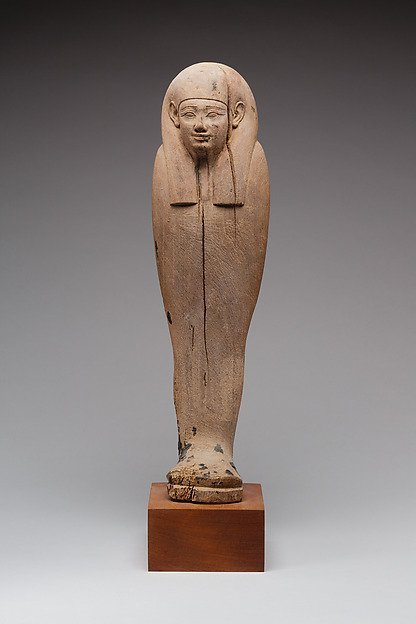
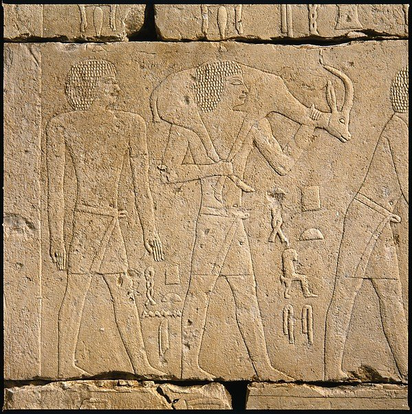
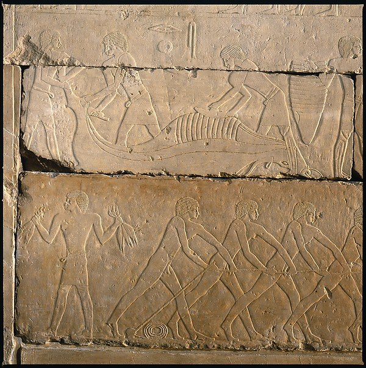
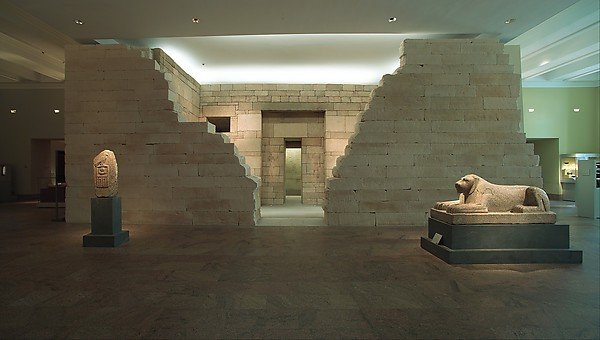
Escrita e literatura: a palavra como poder
Os egípcios desenvolveram três sistemas de escrita, em evolução histórica:
- Hieróglífica (medu netjer, “palavras dos deuses”): escrita pictográfica monumental, usada em relevos de templos e tumbas. Combina sinais fonéticos (uniliterais, biliterais e triliterais) com determinantes (sinais silenciosos que indicam a categoria semântica da palavra).
- Hierática: forma cursiva da hieróglífica, usada por escribas em papiros religiosos e documentos administrativos desde o Antigo Reino. Era mais rápida de escrever e permitia maior fluência.
- Demótica: forma ainda mais simplificada, surgida no Período Tardio (c. 660 a.C.), usada no dia a dia e em documentos legais. É a forma de escrita decifrada originalmentedo a Pedra de Roseta (Champollion, 1822), além do grego e do hieróglifo.
Os hieróglifos: anatomia de um sistema misto
A escrita hieroglífica não é nem um alfabeto nem uma escrita puramente pictórica, mas um sistema misto, redundante e econômico. Um mesmo signo pode funcionar como logograma — quando representa diretamente a palavra ou o objeto figurado —, como fonograma — quando registra um, dois ou três sons consonantais (unilíteros, bilíteros e trilíteros) — e ainda como determinativo: signo mudo colocado ao final do vocábulo, que indica sua categoria semântica (pessoa, divindade, cidade, ação, material) e desfaz ambiguidades (Allen, 2014, cap. 1). Essa dupla articulação entre som e sentido permite que uma mesma sequência gráfica seja lida de maneiras distintas conforme o contexto e a convenção — o que explica tanto a precisão terminológica dos gêneros técnicos quanto a abundância de jogos gráficos nos textos religiosos (Ritner, 1996, seção 4).
O inventário de signos é amplo, mas não infinito: o egípcio médio emprega algumas centenas de signos em uso corrente, selecionados num repertório catalogado na casa dos milhares; esse número cresce de forma acentuada no período greco-romano, quando os templos ptolemaicos e romanos exploram grafias compostas, variantes locais e sinais com valores múltiplos. A lista de referência continua sendo a de Alan Gardiner, que organizou os signos em cerca de 26 categorias (de “A” a “Z”, mais a série “Aa”) segundo critérios de forma e conteúdo, com numeração ainda hoje utilizada na literatura egiptológica e nos repertórios digitais de signos (Gardiner, 1957, pp. 438-548). Note-se, por fim, que a escrita egípcia registrava apenas consoantes: as vogais, não grafadas, foram perdidas e só podem ser reconstruídas indiretamente, sobretudo pelo copta — a última fase da língua egípcia, escrita com o alfabeto grego acrescido de sinais demóticos. A direção da escrita era livre — horizontal ou vertical, da direita para a esquerda ou da esquerda para a direita —, e as figuras de seres vivos eram sempre voltadas para o início da leitura (Allen, 2014, cap. 1).
Esse caráter iconográfico nunca foi abandonado. Os hieróglifos mantiveram, ao longo de três milênios, a tensão entre valor sonoro e valor plástico, de modo que a cultura egípcia pode ser descrita como um sistema em que texto e imagem não se separam em domínios autônomos (Baines, 2007, cap. 1). O estudo dessa literatura — de sua retórica, de seus gêneros e de suas condições de produção e transmissão — constitui hoje um campo próprio, com obras de referência coletivas e monografias dedicadas a cada corpus (Loprieno, 1996; Quirke, 2004).
Suportes, instrumentos e a economia da escrita
A monumentalidade das inscrições em pedra não deve obscurecer um fato central: a escrita egípcia foi, antes de tudo, uma tecnologia administrativa sobre suportes perecíveis. O papiro — produzido a partir das hastes trançadas da planta homônima — era o suporte nobre, escrito primeiro na face interna do rolo (o recto) e depois na externa (o verso); ao lado dele circulavam os ostraca, fragmentos de cerâmica ou lascas de calcário empregados em rascunhos, exercícios escolares, contas e bilhetes cotidianos, cujo valor documental é imenso para a história social do Novo Reino — como no caso da vila de trabalhadores de Deir el-Medina (Metropolitan Museum of Art, s.d.). O instrumental do escriba era simples e padronizado: juncos ou canas cortados em ponta, água e pastilhas de tinta, sendo a tinta preta de base de carbono e a vermelha, de hematita, reservada a rubricas, títulos e destaques (Metropolitan Museum of Art, s.d.).
A escrita tinha também uma economia social restrita. As estimativas do grau de alfabetização no Egito antigo são baixas — entre 0,5% e 3% da população, com concentração urbana e masculina —, ainda que o domínio prático de sinais, fórmulas e registros fosse mais difundido do que a leitura plena de textos literários (Baines, 1983, pp. 572-599). Ser escriba (s) significava, portanto, pertencer a um grupo funcionalmente indispensável ao Estado, cuja formação se dava nas per ankh (“casas da vida”) anexas a templos e palácios — instituições que funcionavam simultaneamente como escolas, oficinas de cópia e centros de armazenamento de textos religiosos, literários e administrativos.
A escrita era vista como um dom divino concedido por Thoth, deus da sabedoria e da lua — “criador da escrita, senhor dos documentos, que faz os escribas escreverem” (Teeter, 2011, p. 37). A profissão de escriba, como já notado, era uma das mais prestigiadas, ligada ao poder estatal.
Textos literários notáveis
A literatura egípcia é uma das mais ricas da antiguidade. Entre os textos mais importantes incluem-se:
- Textos das Pirâmides (c. 2350-2100 a.C.): os textos religiosos mais antigos do mundo, contendo encantamentos para a ascensão do faraó ao céu. “O rei voa ao céu entre os deuses” (Allen, 2005, p. 27).
- Livro dos Mortos (c. 1550-1070 a.C.): coleção de 190 feitiços para a proteção do falecido no além. O capítulo 125, do julgamento perante Osíris, é o texto mais copiado e ilustrado.
- Literatura sapiencial: textos de instrução moral, como a “Instrução de Amenemope” (c. 1200 a.C.), que possivelmente influenciou os Provérbios bíblicos. O texto aconselha: “Não te associas a um homens irado, nem o aborreças” (Lichtheim, 1973, p. 153).
- Contos e narrativas: o “Conto do Camponês Eloquente” (c. 1800 a.C.), um texto magistral de retórica e protesto social camponês contra a injustiça dos poderosos; a “História de Sinuhe” (c. 1900 a.C.), que narra a fuga e o retorno de um cortegiano egípcio ao longo da vida; e a “História de Wenamun” (c. 1050 a.C.), que viagens de um sacerdote tebano à Fenícia em busca de cedros para os templos — documentos que nos dão acesso às mentalidades e aos problemas cotidianos (Lichtheim, 1973, pp. 222-236).
- Literatura amorosa: poemas de amor da estela de Cheik Abd el-Gurna (c. 1200 a.C.), expressando um passion love sensual e poética: “A voz da pomba diz: ‘A terra está em flor; tempo de andar(?) no campo…’ — eu ti amo, eu ti amo!” (Lichtheim, 1973, pp. 178-180).
Os textos funerários: do rito ao livro
A literatura egípcia nasce da liturgia funerária, e não da ficção. Os Textos das Pirâmides, inscritos nos corredores e câmaras das pirâmides reais da 5ª e da 6ª dinastias, formam o mais antigo corpus religioso extenso conhecido — algumas centenas de fórmulas cujo objetivo é garantir a ascensão do faraó morto ao firmamento e sua assimilação a Osíris e a Rê (Allen, 2005, Introdução). Entre essas fórmulas destaca-se a chamada “Canção Canibal” (Utterances 273-274), na qual o rei morto devora os deuses para incorporar seu poder: um texto que a crítica recente lê menos como barbárie ritual do que como peça de teologia política, na qual a realeza divina se constitui pela assimilação do divino (Eyre, 2002, cap. 1). No Primeiro Período Intermediário, quando o ritual real se “democratiza”, esse acervo migra para as paredes dos caixões de particulares e dá origem aos Textos dos Sarcófagos; no Novo Reino, o conjunto se autonomiza em relação ao espaço físico da tumba e passa a ser copiado em papiros — o que a tradição moderna chama de Livro dos Mortos, título derivado da expressão egípcia pert em hru (“saída para a luz do dia”), aplicada ao complexo de fórmulas que devia acompanhar o morto (Faulkner, 1990, cap. 1; Hornung, 1999b, cap. 1).
Convém sublinhar que tais textos não formam um “livro” unitário: constituem um repertório variável de fórmulas e cenas, copiado conforme o gosto, a tradição familiar e o orçamento do cliente — razão pela qual dois papiros do Livro dos Mortos raramente coincidem em conteúdo. Entre as composições mais elaboradas do Novo Reino estão o Amduat (“O que está no submundo”), o Livro dos Portões e o Livro da Vaca Celeste, que descrevem, em registro cosmográfico, a viagem noturna do sol pelo mundo inferior e sua regeneração ao amanhecer: uma topografia do além que é simultaneamente teológica e política, pois ordena a geografia do Duat segundo a mesma lógica hierárquica do Estado (Hornung, 1999b, cap. 2). O capítulo 125 do Livro dos Mortos, com a “confissão negativa” e a pesagem do coração diante da balança de Ma’at, fixou-se como a formulação clássica da ética funerária egípcia: o morto afirma não ter cometido uma longa série de faltas — roubar, matar, desviar água, alterar pesos e medidas, ser causa de lágrimas —, e o resultado do julgamento depende de sua conformidade com a ordem justa (Faulkner, 1990, cap. 125).
Literatura sapiencial (sebayt)
O gênero mais prestigiado da literatura egípcia é o das Instruções (sebayt): discursos de um mestre — geralmente um pai, um vizir ou um rei em fim de vida — dirigidos a um discípulo, nos quais a sabedoria prática (ma’at) é transmitida como norma de conduta e de governo. A “Instrução do vizir Ptahhotep”, composta possivelmente no Reino Médio sobre material mais antigo, articula uma ética do autocontrole, da moderação e da escuta: o silêncio (gr) é apresentado como virtude ativa, e a contenção da palavra, como forma superior de poder (Lichtheim, 1973, vol. 1, pp. 61-80; Parkinson, 1997, p. 246). A “Instrução dirigida ao rei Merikare”, redigida na virada do Primeiro Período Intermediário, desloca a sabedoria para o plano político e expõe técnicas de governo — reprimir rebeldes, controlar o exército, punir dissimuladamente — ao mesmo tempo em que admoesta o herdeiro à justiça: “Fazei justiça, para que vos firmeis na terra; acalmai o que chora, não oprimais a viúva” (Lichtheim, 1973, vol. 1, pp. 97-112).
Na 12ª dinastia, o gênero se enriquece com o “testamento” ficcional do rei Amenemhat I, supostamente composto no dia de seu assassinato, no qual o soberano advertia o filho contra a traição dos cortesãos — texto abundantemente copiado em exercícios escolares e utilizado como peça de legitimação dinástica (Lichtheim, 1973, vol. 1, pp. 135-139; Parkinson, 1997, p. 203). Mais tarde, a “Instrução de Amenemope” (Novo Reino) reorganiza o gênero em trinta capítulos de sentenças curtas e teologicamente densas, com tom marcadamente devocional: a justiça divina atua em favor dos humildes, e o êxito material do ímpio é provisório. O parentesco temático e formal dessa obra com os Provérbios bíblicos (sobretudo o capítulo 22) foi identificado desde o início do século XX e permanece como um dos casos mais sólidos de contato literário entre o Egito e o antigo Israel (Lichtheim, 1976, vol. 2, pp. 146-163).
O gênero sobrevive ao fim da realeza faraônica autônoma e reaparece em demótico: a “Instrução de Ankhsheshonq” apresenta-se como coleção de máximas compostas por um sábio encarcerado, e a “Instrução do Papiro Insinger” organiza sentenças em capítulos temáticos sobre paciência, resignação e o caráter insondável do destino (Lichtheim, 1980, vol. 3, pp. 159-216). A continuidade do gênero sapiencial por mais de dois milênios — do Antigo Reino ao período romano, do hierático ao demótico — é um dos indícios mais fortes da permanência de uma ética letrada egípcia.
Contos, narrativas e a invenção da ficção
Se o Reino Médio é a “idade clássica” da literatura egípcia, isso se deve em grande parte à sua ficção narrativa. A “História de Sinuhe”, preservada em numerosos manuscritos, narra a fuga de um cortesão após a morte de Amenemhat I, sua vida entre os asiáticos, seu duelo vitorioso e o retorno final à corte, onde é recebido pelo rei e reintegrado à ordem de que se havia afastado. A obra é notável pela psicologia do narrador, pelo manejo do tempo e pela composição em versos com refrões; o momento em que Sinuhe, diante do decreto real, se lança sobre o ventre em gratidão — “Ao ser lido para mim, lancei-me sobre o meu ventre, toquei o solo e o espalhei sobre o meu peito” — é a formulação exemplar do tema egípcio da reintegração, em que o exílio funciona como morte simbólica e o retorno, como renascimento (Lichtheim, 1973, vol. 1, pp. 222-233, p. 230).
O “Conto do Camponês Eloquente” (c. 1800 a.C.) leva a retórica ao centro do texto: um camponês chamado Khunanup tem seus bens roubados por um funcionário e apresenta nove petições a um alto oficial; o interesse do relato está menos na trama do que nas petições, verdadeiras peças oratórias sobre a justiça, o silêncio e a responsabilidade do governante. “Fazei justiça para o Senhor da justiça… pois a justiça é para a eternidade: ela entra na necrópole com quem a praticou” — a fórmula resume a ética do texto, cuja estrutura circular faz o camponês perder no primeiro nível da justiça humana para vencê-la por meio do discurso (Lichtheim, 1973, vol. 1, pp. 169-184). O “Náufrago” (ou “Marinheiro Naufragado”), por sua vez, é uma narrativa maravilhosa com forte componente ritual: um sobrevivente relata sua estada numa ilha paradisíaca governada por uma serpente sobrenatural — “Eu sou o Senhor de Punt, e a mirra é minha propriedade” — que lhe promete o retorno à casa. O texto enuncia com nitidez a função terapêutica da narrativa: “Como é feliz quem conta o que provou, quando a calamidade passou” (Lichtheim, 1973, vol. 1, pp. 211-213). Já as “Três Histórias de Maravilhas”, ambientadas na corte de Khufu e de seus sucessores, funcionam como coleção de prodígios emoldurada por uma genealogia dinástica, oferecendo uma das mais antigas manifestações da estrutura narrativa em encaixe (Lichtheim, 1973, vol. 1, pp. 213-222).
O gênero atravessa o Novo Reino com a “História de Unamun” (Wenamun), relato em primeira pessoa da viagem fracassada de um enviado tebano à Fenícia em busca de madeira para a barca de Amon (c. 1075 a.C.). O texto é hoje lido como narrativa de ficção de aparência autobiográfica, na qual o conflito com o príncipe de Byblos e as humilhações do protagonista expõem, com ironia discreta, o contraste entre a memória do império e a fragilidade do presente — “o que Sinuhe é para o Reino Médio, Wenamun é para o Novo Reino: um ponto de culminação literária” (Lichtheim, 1976, vol. 2, p. 224). No ciclo mitológico, “As Contendas de Hórus e Seth”, preservadas no Papiro Chester Beatty I (20ª dinastia), reúnem episódios de humor escatológico e violência ritual em torno do julgamento da herança de Osíris, com Seth e Hórus disputando a realeza perante o tribunal divino — um mito de sucessão que legitima, no plano cósmico, a realeza egípcia (Lichtheim, 1976, vol. 2, pp. 214-223). Na fase demótica, os contos de Setne Khamwas — que retomam o tema do mago letrado que decifra textos escondidos e disputa com sábios rivais — demonstram a continuidade do gênero narrativo até o período romano, já fortemente hibridizado com motivos do Oriente Próximo (Lichtheim, 1980, vol. 3, pp. 125-151).
Poesia: hinos, harpas e o amor
Uma parte substancial da literatura egípcia é poesia. Os hinos aos deuses — do Grande Hino a Osíris ao “Grande Hino ao Aton”, atribuído a Akhenaton e composto em paralelismos, com imagens de luz, criação e amanhecer que se tornaram canônicas — eram recitados no contexto cultual, mas adquiriam também função pedagógica, como modelos de estilo copiados nas escolas (Lichtheim, 1976, vol. 2, pp. 96-99). Aos hinos acrescentam-se os cantos de harpa, executados nos banquetes funerários e, em alguns casos, atravessados por uma nota epicurista que inverte o tom grave da ocasião ao convidar o ouvinte a gozar o dia presente — motivo cuja proximidade com o carpe diem posterior é frequentemente notada pela crítica (Lichtheim, 1973, vol. 1, pp. 193-197; Lichtheim, 1976, vol. 2, p. 115).
Os poemas de amor, transmitidos sobretudo pelos papiros Chester Beatty I, Harris 500 e pelo vaso Cairo 1266+25218 (Novo Reino), constituem o corpus lírico mais original da literatura egípcia: alternam vozes masculina e feminina, exploram o corpo e a paisagem como metáforas recíprocas, e empregam refrões e paralelismos — “Vem a mim, para que eu contemple tua beleza; pai e mãe se alegrarão” — que a crítica moderna aproximou tanto do Cântico dos Cânticos quanto da lírica grega arcaica (Fox, 1985, pp. 1-30; Lichtheim, 1976, vol. 2, pp. 181-193). A existência de um gênero amoroso profano, copiado em contexto escolar e transmitido em antologias manuscritas, mostra que a literatura egípcia não se reduz à moral ou ao culto, mas inclui o prazer estético do texto.
A ideologia do escriba e a imortalidade pelo texto
Uma das contribuições mais originais da literatura egípcia é a reflexão sobre o próprio ato de escrever. O Papiro Lansing (British Museum 9994, 20ª dinastia), manual escolar em onze seções dedicado ao tema “sê escriba”, é um elogio programático da carreira letrada: “Ame escrever, evite a dança; então te tornarás um oficial digno… Dedica-te ao rolo e à paleta: ele agrada mais do que o vinho. Escrever, para quem o conhece, é melhor do que todas as outras profissões” (Lichtheim, 1976, vol. 2, p. 168). O mesmo papiro procede por contraste, descrevendo as misérias dos outros ofícios — o oleiro, o pescador, o lavrador, o construtor — num catálogo de fadigas que é, ao mesmo tempo, propaganda profissional e documento de história do trabalho, gênero que a “Sátira dos Ofícios” (ou “Instrução de Duau-Khety”) levara ao extremo do sarcasmo (Lichtheim, 1973, vol. 1, pp. 184-192).
Mais decisivo, porém, é o texto conhecido como “A Imortalidade dos Escritores” (Papiro Chester Beatty IV, verso 2,5-3,11), que propõe uma teoria explícita da permanência pela escrita: os sábios do passado não ergueram túmulos de cobre nem deixaram herdeiros carnais, mas “fizeram para si mesmos herdeiros de livros”; “as Instruções são seus túmulos, o junco é seu filho, a superfície de pedra, sua esposa” (Lichtheim, 1976, vol. 2, p. 175). Trata-se de uma das formulações mais antigas que se conhecem do escritor como autor — e de uma resposta egípcia, literária e não monumental, ao problema da morte, o que dialoga diretamente com a centralidade do nome (ren) na antropologia funerária egípcia discutida acima: o corpo e a tumba perecem, mas o texto recitado assegura a pronúncia contínua do nome.
Cartas, arquivos e o cotidiano
À margem dos grandes gêneros, a correspondência egípcia constitui um corpus substancial de cartas de todas as épocas, que documenta a linguagem coloquial, as relações de patronato, os problemas de abastecimento, as queixas de funcionários e os pedidos de intervenção junto a mortos e deuses (Wente, 1990, Introdução). Sem ambição literária, essas cartas são o testemunho mais direto da vida social egípcia — e, combinadas com os ostraca e com os arquivos administrativos, permitem reconstruir práticas de escrita e de leitura que o registro monumental tende a ocultar.
Fontes complementares citadas nesta seção
As obras abaixo não constavam da bibliografia original deste dossiê e foram acrescentadas como suporte das informações e traduções apresentadas nesta seção:
- ALLEN, James P. Middle Egyptian: An Introduction to the Language and Culture of Hieroglyphs. 3ª ed. Cambridge: Cambridge University Press, 2014.
- BAINES, John. “Literacy and Ancient Egyptian Society”. Man, nova série, v. 18, n. 3, 1983, pp. 572-599.
- BAINES, John. Visual and Written Culture in Ancient Egypt. Oxford: Oxford University Press, 2007.
- DAVIES, W. V. Egyptian Hieroglyphs. Londres: British Museum Press, 1987.
- EYRE, Christopher. The Cannibal Hymn: A Cultural and Literary Study. Liverpool: Liverpool University Press, 2002.
- FOX, Michael V. The Song of Songs and the Ancient Egyptian Love Songs. Madison: University of Wisconsin Press, 1985.
- GARDINER, Alan H. Egyptian Grammar: Being an Introduction to the Study of Hieroglyphs. 3ª ed. Oxford: Griffith Institute, 1957.
- HORNUNG, Erik. The Ancient Egyptian Books of the Afterlife. Trad. David Lorton. Ithaca: Cornell University Press, 1999. [citado nesta seção como Hornung, 1999b]
- LOPRIENO, Antonio (org.). Ancient Egyptian Literature: History and Forms. Leiden: Brill, 1996.
- METROPOLITAN MUSEUM OF ART. “Papyrus in Ancient Egypt”. Heilbrunn Timeline of Art History. Nova York: The Met. Disponível em: https://www.metmuseum.org/essays/papyrus-in-ancient-egypt
- PARKINSON, R. B. The Tale of Sinuhe and Other Ancient Egyptian Poems, 1940-1640 BC. Oxford: Clarendon Press, 1997.
- PARKINSON, R. B. Cracking Codes: The Rosetta Stone and Decipherment. Londres: British Museum Press, 1999.
- QUIRKE, Stephen. Egyptian Literature 1800 BC: Questions and Readings. Londres: Golden House Publications, 2004.
- RITNER, Robert K. “Egyptian Writing”. In: DANIELS, Peter T.; BRIGHT, William (orgs.). The World’s Writing Systems. Nova York: Oxford University Press, 1996, seção 4.
- WENTE, Edward F. Letters from Ancient Egypt. Atlanta: Scholars Press, 1990.
A decifração dos hieróglifos
A decifração moderna dos hieróglifos foi concluída por Jean-François Champollion em 1822, após o estudo da Pedra de Roseta (1799), que continha o mesmo texto em três escritas (hieróglifica, demótica e grego). Champollion identificou que os sinais podiam ser fonéticos (um princípio já demonstrado por Thomas Young para os cartuchos reais) e não apenas simbólicos, desvendando o sistema de escrita egípcio após séculos de interpretações alegóricas (Hornung, 1999, pp. 10-15). A historiografia recente insiste, contudo, que a “descoberta” foi um processo coletivo e gradual, no qual a identificação do valor fonético dos sinais em nomes estrangeiros nos cartuchos greco-romanos — feita por Young, Åkerblad e outros — precedeu a síntese de Champollion, e no qual a própria materialidade da estela, com suas três escritas e seu contexto de achado, desempenhou papel decisivo (Parkinson, 1999; Davies, 1987, cap. 1). A egiptologia nasceu como disciplina no século XIX, continuando a produzir novas descobertas — como a identificação dos Textos das Rei, a descoberta em 1922 da tumba de Tutankhamon por Howard Carter (Wilkinson, 1999, pp. 225-235) e, em 1976, a radiografia do corpo mumificado do faraó com revelações sobre sua saúde e morte.
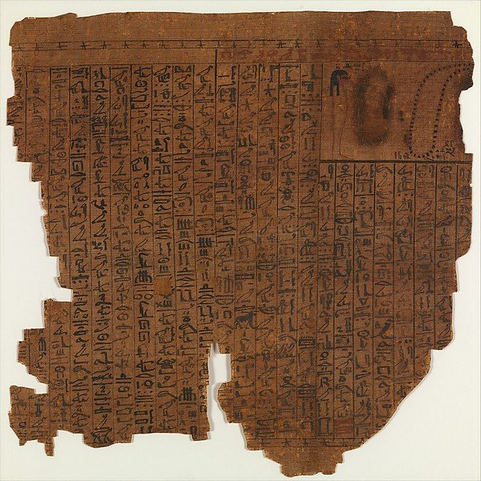
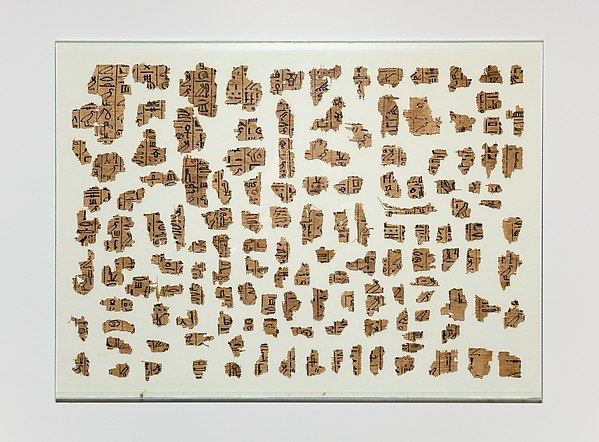
Economia e tecnologia: o Nilo como coração
A economia egípcia era agrícola, redistributiva e estatal. A agricultura dependia inteiramente das inundações do Nilo, que depositavam limos férteis nas margens, permitindo a cultura de trigo, cevada, linho, cebola, alho, feijão, pepino e frutas de palmeira, figo e uva. O sistema de irrigação incluía canais, reservatórios e a “cova de irrigação” (shaduf), um mecanismo utilizado para elevar a água do Nilo para os campos, inventado durante o Novo Império (Wilkinson, 1999, p. 106). O shaduf consiste em uma longa haste montada como gangorra, com um balde de couro ou cesto suspenso por corda em uma das extremidades e um contrapeso na outra: o operador puxa a corda para baixar e encher o balde, e o contrapeso o faz subir — dispositivo que, segundo a descrição da Encyclopaedia Britannica, podia ser montado em série, um acima do outro, para elevar a água a níveis superiores (Britannica, “shaduf”).
A agricultura e o ciclo da inundação
O ano agrário egípcio não era uma abstração religiosa, mas a codificação direta do comportamento do rio. Os egípcios dividiam o ano civil em três estações: Akhet (a inundação), durante a qual o vale permanecia alagado e os camponeses eram requisitados para as grandes obras do Estado; Peret (a “emergência” das terras), quando o recuo das águas expunha o lodo fertilizado e se procedia à aração, à semeadura e à irrigação suplementar; e Shemu (a seca), a estação da colheita, da debulha e do transporte do grão para celeiros e silos estatais (Shaw, 2000, pp. 55-60). Essa divisão tripartite, atestada desde o Antigo Reino e ligada à etimologia do próprio calendário, organizava a tributação, o recrutamento de mão de obra e a liturgia do templo.
A técnica agrícola central era a irrigação de bacia (basin irrigation), descrita pela engenharia hidráulica histórica como uma adaptação produtiva do ritmo natural do rio: redes de diques de terra — alguns paralelos, outros perpendiculares ao leito — formavam compartimentos onde a água da cheia era admitida por comportas e permanecia cerca de um mês, saturando o solo antes de ser drenada para a bacia a jusante ou para um canal vizinho. O resultado era um campo de cultivo em grade que retinha a água por mais tempo do que ela permaneceria naturalmente, e uma paisagem agrária que podia ser reorganizada a cada ano conforme o traçado da cheia (Butzer, 1976, pp. 17-30). Karl W. Butzer demonstrou que essa infraestrutura, somada aos canais de derivação e aos reservatórios de estocagem para os anos de cheia fraca, exigia coordenação de trabalho em escala supracomunitária — um dos argumentos mais influentes para explicar a formação precoce do Estado egípcio como “civilização hidráulica” (Butzer, 1976, pp. 89-106).
A previsão da cheia era, por isso, assunto de Estado. O instrumento para medi-la era o nilômetro, poço ou escada graduada instalada nas margens ou em ilhas do rio, como os de Elefantina e do templo de Kom Ombo, cujas leituras anuais permitiam estimar a colheita, fixar a base tributária dos nomos e, nos anos de cheia insuficiente, acionar a redistribuição de grãos dos celeiros reais. As leituras eram registradas e comparadas ao longo de décadas, constituindo o mais antigo registro hidrológico sistemático de que se tem notícia (Kemp, 2006, pp. 236-242). O próprio Estado se representava como distribuidor da abundância: no célebre relevo do “caminho da vida” da tumba de Kheti, em Beni Hasan, e nos calendários de oferendas das capelas funerárias, as atividades agrícolas — a ceifa, a debulha, a vindima e a criação de gado — eram retratadas como ciclos que o senhor, morto, continuaria a presidir (Teeter, 2011, pp. 96-101).
Além do trigo emmer (Triticum dicoccon), da cevada — matéria-prima do pão e da cerveja, os dois pilares da dieta e do pagamento de salários — e do linho, a agricultura egípcia produziu o papiro (suporte da escrita), a tamareira, a figueira, a videira, o olival, a alface, o alho e a cebola, esta última reputada por suas propriedades medicinais. A criação de gado bovino, ovino, caprino e asinino, a avicultura e a pesca — atestadas nos relevos de Saqqara e nas capelas reconstruídas no Metropolitan Museum — completavam um sistema alimentar diversificado que sustentava populações estimadas em milhões de habitantes no Novo Império (Shaw, 2000, pp. 58-62).
O Estado redistributivo e os impostos
O Estado governava uma economia em que a terra pertencia ao faraó, e os camponeses deviam em troca do uso da terra uma parte significativa da colheita como tributo em espécie, além do trabalho corvée (trabalho compulsório) para grandes obras públicas — estradas, templos, pirâmides e irrigação. A administração registrava os impostos em papiros: o “Papiro de Ambras” (c. 1150 a.C.) lista os trigramas de impostos de alguns contribuintes, demonstrando a complexidade da contabilidade real (Kemp, 2006, pp. 236-242). Distribuição de rações aos trabalhadores das tumbas reais — frequentemente mencionados nos ” ostraca” (cerâmica ou calhares escavados), como os de Deir el-Medina, a vila dos construtores de tumbas do Novo Império — era uma das principais atividades do Estado.
Tecnologia e engenharia
Os egípcios desenvolveram tecnologias avançadas para a época:
- Construção: técnicas de corte, transporte e elevação de blocos de pedra com precisão milimétrica. A Pirâmide de Khufu tem uma base horizontal com uma diferença máxima de 2,1 cm em 230 m de lado, e os ângulos retos das câmaras internas demonstram um conhecimento avançado de geometria prática (Kemp, 2006, pp. 168-175).
- Pedreiras e tecnologia pétrea: o calcário fino de revestimento vinha de Tura e Maasara, o granito de Assuão, o calcário de qualidade média de Gizé e o arenito de Gebel el-Silsila. O corte empregava serras de cobre com abrasivo de quartzo, cinzéis e macetas de dolerito, além de cunhas de madeira umedecidas que fraturavam o bloco pela pressão de expansão; o transporte em trenós de madeira, lubrificados com lama e puxados por equipes com cordas de linho, está documentado no relevo da tumba de Djehutihotep, em El-Bersheh, que mostra uma estátua colossal sendo arrastada por 172 homens (Arnold, 1991, pp. 27-45, 255-270).
- Alvenaria e assentamento: a precisão das juntas entre blocos, ajustadas a menos de um milímetro em alguns pontos, foi obtida pelo desbaste mútuo das faces em contato e pelo uso de argamassa de gesso (gypsum plaster) como leito nivelador; as câmaras internas da Grande Pirâmide, com seus “blocos de alívio” sobre a Câmara do Rei, refletem um cálculo deliberado de distribuição de carga que a engenharia moderna reconhece como estruturalmente coerente (Arnold, 1991, pp. 160-190).
- Medicina: o Papiro de Edwin Smith (c. 1600 a.C.) descreve 48 cirurgias clínicas com observações racionais — como a descrição do pulso e a observação de que o cérebro controla os membros. O Papiro de Ebers (c. 1550 a.C.) lista cerca de 700 fórmulas médicas e mágicas, incluindo a utilização de mel, alho, cebola, e óleos essenciais com propriedades antissépticas reconhecidas.
- Matemática: sistema decimal de numeração, mas com base aditiva (não posicional); frações egípcias eram unitárias (1/n); conhecimento de geometria para agrimensura após as inundações — veja o “Papiro Matemático de Rhind” (c. 1550 a.C.), que contém problemas de equação linear, área de triângulos, círculos e volumes.
- Metalurgia: o cobre era extraído no Sinai (Serabit el-Khadim) e na Núbia; a liga com estanho importado da Anatólia ou do planalto iraniano produzia bronze, cujo uso se difundiu a partir do Reino Médio. O domínio da cera perdida permitiu estatuetas e utensílios de parede fina, atestados nas peças de bronze do Metropolitan Museum, enquanto o ouro núbio (nbw) se tornou o principal produto de exportação do Egito imperial (Kemp, 2006, pp. 260-268).
- Vidro e faiança: a faiança egípcia — pasta de quartzo recoberta de esmalte alcalino azul-esverdeado — era produzida desde o Antigo Reino para amuletos, contas e vasos; a partir do Novo Reino os egípcios também produziram vidro, provavelmente aprendido no contato com a Mesopotâmia e com a costa síria (Shaw, 2000, pp. 505-510).
- Astronomia: calendário solar de 365 dias (12 meses de 30 dias + 5 dias epagômenos), base na observação do nascer heliacal de Sírius (Sothis), que coincidia com a inundação do Nilo — o ano novo egípcio começava em meados de agosto (Hornung, 1999, p. 38).
Comércio externo
O Egito mantinha redes de comércio com o sul (Núbio, Punt), o leste (Fenícia, Síria-Palestina) e o oeste (Grécia micênica, Creta). Numa lista da base do templo de Deir el-Bahari, a rainha Hatshepsut enviou cinco navios ao país de Punt (provável Somalilândia/Eritreia) para obter mirra, ébano, marfim e animais exóticos — a expedição mais bem documentada do Novo Império, com representações detalhadas em relevos e no templo de Deir el-Bahari (Wilkinson, 1999, p. 130).
As rotas e a estrutura do comércio de longa distância
Esse comércio não era um bloco homogêneo, mas um conjunto de vetores com lógicas distintas. Ao sul, a Núbia fornecia ouro, marfim, ébano, penas de avestruz, peles de pantera e gado; o controle da primeira catarata e a cadeia de fortalezas erigidas no Reino Médio em Buhen, Semna e Uronarti tinham função simultaneamente defensiva e aduaneira, garantindo a segurança das rotas de abastecimento (Kemp, 2006, pp. 210-228). Ao leste, as rotas do Sinai e do Wadi Hammamat davam acesso ao cobre e à turquesa de Serabit el-Khadim e ao arenito e granito do Deserto Oriental, enquanto os portos do Mar Vermelho — em particular Mersa/Wadi Gawasis, de onde partiram expedições ao Punt no Reino Médio — ligavam o Egito às redes de navegação do Índico (Shaw, 2000, pp. 313-318). Ao norte, o comércio com Byblos, na costa fenícia, era estrategicamente decisivo: o cedro do Líbano era a principal madeira de grande porte disponível para a construção naval e para portas e mastros de templos, e é justamente essa dependência que a “História de Wenamun” (c. 1050 a.C.), já citada neste dossiê, dramatiza na viagem de um enviado tebano à Fenícia. Ao noroeste, cerâmica micênica, minoica e cipriota, além de azeite e prata do Egeu, aparecem em contextos egípcios como Tell el-Dab’a (Avaris) e Amarna, atestando um fluxo mediterrâneo estável no Segundo Período Intermediário e no Novo Império (Kemp, 2006, pp. 280-296).
Sobre esse comércio operavam dois mecanismos paralelos: a troca diplomática de dádivas entre cortes, testemunhada pelas cartas de Amarna e pelos relevos de tributos e oferendas estrangeiras, e o mercado propriamente dito, com agentes, intérpretes e mercadores que negociavam com moedas de troca em gêneros (Shaw, 2000, pp. 500-510).
Metrologia e meios de troca: uma economia sem moeda
O Egito não conheceu moeda cunhada antes da introdução do modelo grego no período ptolomaico. O valor era medido por peso de metal, não por peça monetária: a unidade padrão era o deben (cerca de 91 gramas de cobre), subdividido em dez qedet ou kite; ouro e prata eram convertidos em equivalentes, e os preços eram expressos em combinações de metal, grão, tecido, azeite e peixe seco. Os ostraca de Deir el-Medina constituem a melhor documentação disponível desse sistema: neles se registram os pagamentos de rações aos construtores de tumbas reais — em grão, pão, cerveja, peixe e ocasionalmente prata — e as trocas cotidianas entre indivíduos, em que uma quantidade de cobre podia equivaler a um volume fixo de grão. A ausência de moeda não significa ausência de preço: significa que a equivalência era fixada por um padrão ponderado e por convenção administrativa, o que explica a centralidade do celeiro, da balança e do escriba-contador na vida econômica egípcia (Kemp, 2006, pp. 296-310).
Medicina e saber médico
O Egito é a mais antiga civilização da qual sobreviveu um corpus técnico escrito de medicina. Os textos fundamentais são o Papiro de Edwin Smith (c. 1600 a.C., cópia de um original provavelmente do Antigo Reino), o Papiro de Ebers (c. 1550 a.C.), o Papiro de Kahun (ginecologia, obstetrícia e veterinária), o Papiro de Hearst e o Papiro de Berlim (pediatria). O Papiro de Edwin Smith é o documento cirúrgico mais notável da Antiguidade: seus 48 casos são organizados em uma estrutura racional e invariável — título, exame, diagnóstico, veredicto e tratamento —, e o veredicto assume três formas estandardizadas, que distinguem os casos tratáveis daqueles apenas controláveis e dos que não devem ser tratados. O caso 6, sobre uma ferida exposta do crânio, contém a mais antiga descrição conhecida das pulsações e da relação entre cérebro, movimento e sensibilidade; James Henry Breasted, que publicou a edição princeps em 1930, observou que o texto reconhece a “ausência de movimento” e a “ausência de sensibilidade” como sinais distintos, sem descrever as meninges nem o fluido cerebrospinal (Breasted, 1930, pp. 290-294).
A medicina egípcia não separava, contudo, o procedimento empírico da causalidade mágico-religiosa: doenças podiam ser atribuídas a causas naturais — obstrução, putrefação, excesso de alimentos —, a deuses, a “maus ventos” ou à ação de mensageiros da deusa Sekhmet. Ao lado do médico (swnw) e do sacerdote purificador (wab), atuava o mago (sau), e a eficácia de um tratamento podia depender tanto da prescrição quanto da recitação que a acompanhava. John F. Nunn, em sua síntese sobre o tema, sustenta que o pragmaticismo técnico do Papiro de Edwin Smith e o ritualismo do Papiro de Ebers não são tradições opostas, mas camadas de uma mesma prática — o que consequentemente torna arriscado falar de “medicina racional” egípcia sem qualificação (Nunn, 1996, pp. 96-115). Heródoto (Histórias, II, 84) já registrava uma medicina especializada — “cada médico se ocupa de uma doença e não de várias” —, e a fama egípcia nesse campo foi tamanha que Imhotep, o arquiteto da Pirâmide de Djoser, foi divinizado tardiamente como deus da cura, equiparado pelos gregos a Asclépio (Hornung, 1999, pp. 92-95).
Astronomia e calendário
A astronomia egípcia nasceu de uma necessidade administrativa e religiosa: determinar os dias rituais, prever a cheia e ordenar o trabalho do Estado. Seu instrumento teórico foi o sistema dos decanos — trinta e seis estrelas ou constelações, cada uma governando um período de dez dias (dekanos), cujo nascer heliacal sucessivo permitia dividir a noite em horas e marcar o ano. Esse conhecimento foi registrado em tábuas estelares diagonais pintadas no interior de sarcófagos do Reino Médio, nas quais se alinham em diagonal a lista dos decanos e as colunas de dias do ano — os mais antigos “relógios estelares” conhecidos. A documentação sistemática desses textos foi realizada por Otto Neugebauer e Richard A. Parker, cuja edição Egyptian Astronomical Texts (1960-1969) permanece a obra de referência para o tema (Neugebauer & Parker, 1960, vol. 1, pp. 1-30).
No Novo Império, os tetos astronômicos de tumbas e templos — como o de Senenmut (TT353, c. 1479 a.C.), um dos mais antigos diagramas celestes conhecidos, com os decanos do norte e do sul e as constelações circumpolares — mostram a fusão entre observação e cosmografia religiosa: a jornada noturna do sol e as estrelas que a acompanham eram também o percurso que o rei falecido deveria trilhar. O cálculo prático repousava sobre um fato astronômico preciso: o ano civil egípcio de 365 dias (doze meses de 30 dias mais cinco epagômenos) era mais curto que o ano solar por cerca de um quarto de dia, de modo que o calendário “vagava” um dia a cada quatro anos em relação ao céu. O retorno do calendário ao ponto de partida — quando o nascer heliacal de Sóthis (Sírius) voltava a coincidir com o primeiro dia do ano e com o início da cheia — levava aproximadamente 1.460 anos egípcios, intervalo que os egiptólogos designam como “ciclo sódico” e que serve de âncora cronológica para datar o reinado de certos faraós de documentos que registram o fenômeno (Hornung, 1999, pp. 36-40). A orientação astronômica foi também inscrita na arquitetura: a orientação da Grande Pirâmide em relação aos pontos cardeais, o eixo de Abu Simbel nos dias 21 de outubro e 21 de fevereiro — discutidos nesta obra — e o alinhamento de santuários como o de Amon-Rê em Karnak em relação ao nascer do sol no solstício de inverno convertem o céu em medida do templo e do poder real (Shaw, 2000, pp. 505-510).
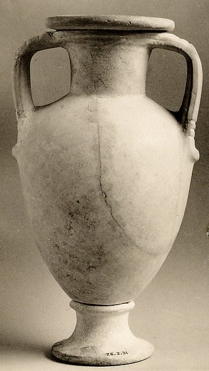
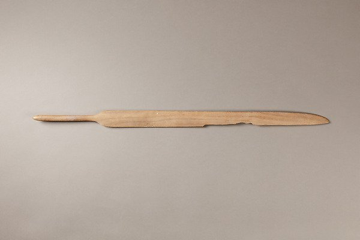
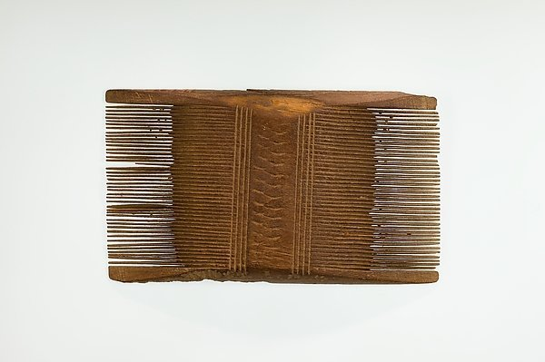
Legado e recepção cultural
O legado do Antigo Egito é imenso e multifacetado. Suas pirâmides e templos continuam a inspirar admiração; a egiptologia, disciplina dedicada ao estudo dessa civilização, surgiu no século XIX e continua a produzir descobertas — como o templo mortuário de Tutankhamon, as tumbas de KV5 (filhos de Ramsés II), os recentes achados em Saqqara e a detecção de novas câmaras no interior da Pirâmide de Khufu (Hawass, 2006, pp. 204-218).
O Egito antigo influenciou profundamente a arte, a arquitetura e a cultura de civilizações posteriores, incluindo a Grécia (que emprestou motivos de sua arquitetura e escultura) e Roma (que adotou o culto de Ísis e constrói templos egípcios em Roma). A egiptomania moderna, com os descobrimentos do século XIX, alimentou o exoticismo no cinema, na literatura e na arte popular — refletida na obra de autores como L. Frank Baum (que escreveu um livro sobre o Egito, The Fate of a Crown, sob pseudônimo de Laura Bancroft), e em produções cinematográficas de Cleópatra (1963), A Múmia (1932) e a franquia recente de Mar do Faraó.
No Brasil, a egiptologia é representada por pesquisadores como Thais Rocha da Silva (UFMG/Oxford), que estuda o espaço doméstico egípcio no Período Amarniano e as práticas sensoriais e negociações de território estrangeiro (Rocha da Silva, 2014), e André Luís Silva Effgen (SESHAT/UFRJ), que pesquisa a cultura material e as representações da morte no Antigo Egito (Effgen, 2019). Outros centros de estudos egípcios no Brasil incluem o MAE/USP (Museu de Arqueologia e Etnologia da USp) e o Programa de Pós-Graduação em Arqueologia da UFMG.
Guia de estudo detalhado
Para quem deseja estudar o Antigo Egito, recomendamos este percurso:
1. Iniciante (2-4 semanas)
- Leia o artigo da World History Encyclopedia — Ancient Egypt (Mark, 2026); acesso gratuito e em português também disponível.
- Assista ao vídeo “Ancient Egypt: The Real Ancient Egypt” do canal History Hit e à série “Civilizações Antigas” do canal ColdFusion.
- Livro introdutório: O Egito Antigo de Cyril Aldred (1965) — clássico em português.
2. Intermediário (1-2 meses)
- Leia The Oxford History of Ancient Egypt (Shaw, 2000) — um manual completo, mas com linguagem acessível.
- Leia History of Ancient Egypt (Hornung, 1999) — especialmente os capítulos sobre religião e o Novo Império.
- Consulte Ancient Egypt Online para imagens de sítios, mapas e cronologia detalhada.
3. Avançado (3-6 meses)
- Consulte a Oxford Encyclopedia of Ancient Egypt (Redford, 2001) e artigos acadêmicos na base JSTOR www.jstor.org com os termos “Ancient Egypt” e “Egyptology”.
- Acesse o Internet Archive para obras em domínio público — como A History of Art in Ancient Egypt de Perrot e Chipiez (1883) e os volumes da coleção Catalogue Général des Antiquités Égyptiennes do Museu do Cairo.
- Leia as traduções dos textos primários em The Ancient Egyptian Book of the Dead (Faulkner, 1990) e The Ancient Egyptian Pyramid Texts (Allen, 2005).
4. Especialização (contínuo)
- Siga os canais do Dr. Chris Naunton (History Hit) e do History of Egypt Podcast (Dominic Perry) para atualizações.
- Pesquise no currículo Lattes pelos autores brasileiros citados neste dossiê para acompanhar publicações recentes.
- Explore o portal do Museu Egípcio do Cairo para ofícias de achados atuais.
Discussão acadêmica atual
| Problema | Posições | Consenso | Fontes |
|---|---|---|---|
| Datação da Grande Pirâmide | 2589-2566 a.C. (cronologia tradicional) vs. datações alternativas (Groenewegen-Frankfort, 1951; Schoch, 2011) | Consenso amplo na egiptologia | Shaw 2000; Wilkinson 1999 |
| Historicidade da narrativa do Êxodo | Evento histórico parcial (Finkelstein & Silberman, 2001) vs. mito fundacional (Redford, 1992) vs. memória de eventos dispersos (Kitchen, 2003) | Debate ativo | Finkelstein 2001; Redford 1992; Kitchen 2003 |
| Natureza da religião egípcia | Politeísmo (Hornung, 1999) vs. henoteísmo (“Só um deus”, Assmann, 2001) vs. “monoteísmo” de Akhenaten (Freud, 1939 vs. Hornung, 1999) | Debate ativo; a posição majoritária é henoteísmo/pragmatismo | Assmann 2001; Hornung 1999; Redford 1992 |
| Propósito das Pirâmides | Tumba real (consenso) vs. máquina de ressurreição (Lauer, 1973) vs. símbolo de poder/estado (Kemp, 2006) | Consenso amplo (tumba real com múltiplas funções) | Wilkinson 1999; Kemp 2006 |
| Origem dos hicsos | Invasão militar (Bietak, 1996) vs. migração gradual (Redford, 1992) vs. revolta interna (Hornung, 1999) | Debate ativo; a posição majoritária é migração gradual | Bietak 1996; Redford 1992 |
| Datação do Êxodo bíblico | Século XIII a.C. (Ramesside) vs. Século XV a.C. (Tutmés III) vs. Sem base histórica (Dever, 2003) | Debate ativo | Finkelstein 2001; Dever 2003 |
| Identificação de Menes | Narmer (Wilkinson, 1999) vs. Hor-Aha (Kemp, 2006) vs. figura mítica (Hornung, 1999) | Consenso amplo (Narmer) | Wilkinson 1999; Shaw 2000 |
| Propósito da mumificação | Preservação do corpo para o ba (consenso) vs. ritual de status social (Taylor, 2004) | Consenso amplo | Ikram & Dodson 1998; Taylor 2004 |
Glossário expandido
| Termo | Definição |
|---|---|
| Faraó | Título do rei do Egito antigo; senhor das Duas Terras; deus-vivo (Horus na terra) |
| Hieróglifos | Sistema de escrita egípcio; sinais pictográficos com valores fonéticos e ideográficos |
| Mumificação | Técnica de preservação do corpo para a vida após a morte; processo de 70 dias |
| Ma’at | Conceito de ordem cósmica, verdade e justiça; deusa da verdade |
| Textos das Pirâmides | Coleção de textos funerários inscritos nas paredes das pirâmides do Antigo Reino |
| Livro dos Mortos | Coleção de feitiços e guias para a vida após a morte; capítulo 125 = julgamento |
| Amarna | Período de reforma religiosa de Akhenaten (c. 1353-1336 a.C.); capital Akhetaten |
| Sistrum | Instrumento musical egípcio; chocalho sagrado usado em rituais |
| Forschungsstand | Termo alemão para “estado do debate”; síntese das posições acadêmicas atuais |
| HIP | Historically Informed Performance; prática de execução musical com instrumentos de época |
| Duat | Submundo egípcio; reino de Osíris e do julgamento dos mortos |
| Ka | Essência vital; alma; componente da pessoa que sobrevive à morte |
| Ba | Personalidade; representado por uma cabeça de pássaro humano; viaja entre mundos |
| Akh | A união de ka e ba no além; o “espírito” glorificado |
| Sah | Corpo mumificado; suporte físico para o ka |
| Ren | Nome; a existência dependia da pronúncia contínua do nome |
| Nomos | Províncias do Egito; 42 no total (22 Alto + 20 Baixo Egito) |
| Visir | tjaty; funcionário mais poderoso do reino; auxiliar direto do faraó |
| Escriba | s; profissão letrada essencial para a administração; altamente prestigiada |
| Pedra de Roseta | Estela com decreto em três escritas; chave para a decifração dos hieróglifos (1822) |
| Champollion | Jean-François Champollion (1790-1832); decifrador dos hieróglifos egípcios |
| Heródoto | Historiador grego (c. 484-425 a.C.); descreveu o Egito em Histórias, livro II |
| Manetho | Sacerdote egípcio (séc. III a.C.); autor da Aegyptiaca, base da cronologia dinástica |
Referências do Dossiê
Bibliografia comentada
- Shaw, Ian (ed.). The Oxford History of Ancient Egypt. Oxford University Press, 2000. Manual de referência com capítulos por período; a obra padrão para estudos universitários.
- Hornung, Erik. History of Ancient Egypt. Cornell University Press, 1999. Síntese em dois volumes: história política e religião; escrita por um dos maiores egiptólogos do século XX.
- Wilkinson, Toby A.H.. Early Dynastic Egypt. Routledge, 1999. Análise detalhada da unificação e das primeiras dinastias; essencial para entender a formação do Estado egípcio.
- Kemp, Barry J.. Ancient Egypt: Anatomy of a Civilization. 2ª ed., Routledge, 2006. Abordagem antropológica da sociedade egípcia; leitura fundamental para compreender a estrutura social e econômica.
- Assmann, Jan. The Search for God in Ancient Egypt. Cornell University Press, 2001. Religião e teologia egípcias; obra de referência para o estudo da mentalidade religiosa.
- Grimal, Nicolas. A History of Ancient Egypt. Blackwell, 1994. Síntese geral em um volume; boa introdução para leitores não especializados.
- Aldred, Cyril. Egypt to the End of the Old Kingdom. Thames & Hudson, 1965. Clássico sobre o Antigo Reino; ainda uma das melhores introduções ao período.
- Teeter, Emily. Religion and Ritual in Ancient Egypt. Cambridge University Press, 2011. Religião e rituais egípcios; obra atualizada com base em fontes primárias.
- Pérez Arroyo, Rafael. Egypt: Music in the Age of the Pyramids. Editorial Centro de Estudios Egipcios, 2003. Reconstrução musical baseada em fontes primárias; único trabalho acadêmico sobre música egípcia antiga.
- Brewer, Douglas J.. Ancient Egypt: Foundations of a Civilization. Cambridge University Press, 2018. Arqueologia e formação do Estado egípcio; obra recente com novas descobertas.
- Lloyd, Alan B. (ed.). A Companion to Ancient Egypt. Wiley Blackwell, 2010. Artigos por especialistas em arqueologia, história e religião; obra de referência avançada.
- Ikram, Salima & Dodson, Aidan. The Mummy in Ancient Egypt: Equipping the Dead for Eternity. Thames & Hudson, 1998. Técnicas de mumificação; obra padrão sobre o tema.
- Hawass, Zahi (ed.). Egyptology at the Dawn of the Twenty-first Century. AUC Press, 2006. Resultados das escavações contemporâneas; obra de referência para a egiptologia atual.
- Faulkner, Raymond O.. The Ancient Egyptian Book of the Dead. British Museum Press, 1990. Tradução clássica ilustrada; a versão padrão em inglês.
- Allen, James P.. The Ancient Egyptian Pyramid Texts. Society of Biblical Literature, 2005. Tradução padrão dos Textos das Pirâmides; obra de referência para o estudo da religião funerária.
- Lichtheim, Miriam. Ancient Egyptian Literature: A Book of Readings. 3 vols., University of California Press, 1973-1980. Antologia de literatura egípcia traduzida; a coleção mais completa em inglês.
- Budge, E.A. Wallis. Osiris: The Egyptian Religion of Resurrection. University Books, 1961. Clássico sobre religião egípcia; obra de referência para o estudo de Osíris.
- James, T.G.H.. Mitos e Lendas do Egito Antigo. Editora Melhores Momentos, 1993. Introdução para o público brasileiro; obra de divulgação de qualidade.
- Cardoso, C.F.. O Egito Antigo. Editora Brasiliense, 1986. Síntese em português; boa introdução para leitores brasileiros.
- Bakos, M.M. (org.). Egiptomania. São Paulo: Paris Editorial, 2004. Coletânea sobre a recepção cultural do Egito; obra de referência para o estudo da egiptomania no Brasil.
- Bakos, M.M.. Fatos e Mitos do Antigo Egito. 2ª ed., Porto Alegre: EDIPUCRS, 2001. Divulgação científica; obra de referência para o público brasileiro.
- Araújo, Luís Manuel de. O Erotismo no Antigo Egito. 2012. Pesquisa de egiptólogo português; obra de referência para o estudo da sexualidade no Egito antigo.
- Rocha da Silva, Thais. Espaço Doméstico no Egito Antigo: Aspectos Sensoriais e Negociações em Território Estrangeiro. FAPESP/USP, 2014. Tese de doutorado; obra de referência para o estudo do espaço doméstico egípcio.
- Butzer, Karl W.. Early Hydraulic Civilization in Egypt: A Study in Cultural Ecology. University of Chicago Press, 1976. Estudo clássico de ecologia cultural que fundamenta a tese da “civilização hidráulica” e a análise da irrigação de bacia. Leitura obrigatória para a economia agrária egípcia.
- Arnold, Dieter. Building in Egypt: Pharaonic Stone Masonry. Oxford University Press, 1991. A obra de referência sobre técnica construtiva egípcia: pedreiras, ferramentas, transporte e assentamento de blocos. Indispensável para o estudo da engenharia faraônica.
- Nunn, John F.. Ancient Egyptian Medicine. British Museum Press, 1996. Síntese médica e histórica do corpus clínico egípcio, com análise crítica do Papiro de Edwin Smith e do Papiro de Ebers.
- Breasted, James Henry. The Edwin Smith Surgical Papyrus. 2 vols., University of Chicago Press, 1930. Edição princeps (com transliteração, tradução e comentário) do mais antigo tratado cirúrgico conhecido; base de toda a literatura posterior sobre o tema.
- Neugebauer, Otto & Parker, Richard A.. Egyptian Astronomical Texts. 3 vols., Brown University Press, 1960-1969. Edição crítica dos textos astronômicos egípcios (decanos, tábuas estelares diagonais, relógios); obra de referência absoluta para a astronomia egípcia.
Notas e referências
- Dorman, Peter F., et al. “ancient Egypt.” Encyclopedia Britannica, 10 Aug. 2026. https://www.britannica.com/place/ancient-Egypt
- Mark, Joshua J.. “Ancient Egypt: The Land of the Gods of Balance and Harmony.” World History Encyclopedia, 10 Jun 2026. https://www.worldhistory.org/egypt/
- Larousse. “Égypte ancienne.” Encyclopédie Larousse en ligne. https://www.larousse.fr/encyclopedie/divers/%C3%89gypte_ancienne/184348
- Redford, Donald B. (ed.). The Oxford Encyclopedia of Ancient Egypt. Oxford University Press, 2001. https://www.oxfordreference.com/display/10.1093/acref/9780195102345.001.0001/acref-9780195102345
- Shaw, Ian (ed.). The Oxford History of Ancient Egypt. Oxford University Press, 2000.
- Hornung, Erik. History of Ancient Egypt. Cornell University Press, 1999.
- Wilkinson, Toby A.H.. Early Dynastic Egypt. Routledge, 1999.
- Kemp, Barry J.. Ancient Egypt: Anatomy of a Civilization. 2ª ed., Routledge, 2006.
- Assmann, Jan. The Search for God in Ancient Egypt. Cornell University Press, 2001.
- Grimal, Nicolas. A History of Ancient Egypt. Blackwell, 1994.
- Aldred, Cyril. Egypt to the End of the Old Kingdom. Thames & Hudson, 1965.
- Teeter, Emily. Religion and Ritual in Ancient Egypt. Cambridge University Press, 2011.
- Pérez Arroyo, Rafael. Egypt: Music in the Age of the Pyramids. Editorial Centro de Estudios Egipcios, 2003.
- Brewer, Douglas J.. Ancient Egypt: Foundations of a Civilization. Cambridge University Press, 2018.
- Lloyd, Alan B. (ed.). A Companion to Ancient Egypt. Wiley Blackwell, 2010.
- Ikram, Salima & Dodson, Aidan. The Mummy in Ancient Egypt: Equipping the Dead for Eternity. Thames & Hudson, 1998.
- Hawass, Zahi (ed.). Egyptology at the Dawn of the Twenty-first Century. AUC Press, 2006.
- Faulkner, Raymond O.. The Ancient Egyptian Book of the Dead. British Museum Press, 1990.
- Allen, James P.. The Ancient Egyptian Pyramid Texts. Society of Biblical Literature, 2005.
- Lichtheim, Miriam. Ancient Egyptian Literature: A Book of Readings. 3 vols., University of California Press, 1973-1980.
- Budge, E.A. Wallis. Osiris: The Egyptian Religion of Resurrection. University Books, 1961.
- James, T.G.H.. Mitos e Lendas do Egito Antigo. Editora Melhores Momentos, 1993.
- Cardoso, C.F.. O Egito Antigo. Editora Brasiliense, 1986.
- Bakos, M.M. (org.). Egiptomania. São Paulo: Paris Editorial, 2004.
- Bakos, M.M.. Fatos e Mitos do Antigo Egito. 2ª ed., Porto Alegre: EDIPUCRS, 2001.
- Araújo, Luís Manuel de. O Erotismo no Antigo Egito. 2012.
- Rocha da Silva, Thais. Espaço Doméstico no Egito Antigo: Aspectos Sensoriais e Negociações em Território Estrangeiro. FAPESP/USP, 2014.
- Finkelstein, Israel & Silberman, Neil Asher. The Bible Unearthed. Free Press, 2001.
- Redford, Donald B. Egypt, Canaan, and Israel in Ancient Times. Princeton University Press, 1992.
- Kitchen, Kenneth A.. On the Reliability of the Old Testament. Eerdmans, 2003.
- Bietak, Manfred. Avaris: The Capital of the Hyksos. British Museum Press, 1996.
- Dever, William G.. Who Were the Early Israelites?. Eerdmans, 2003.
- Taylor, John H.. Mummy: The Inside Story. British Museum Press, 2004.
- Freud, Sigmund. Moses and Monotheism. Hogarth Press, 1939.
- Lauer, Jean-Philippe. La Pyramide à Degrés. IFAO, 1973.
- Groenewegen-Frankfort, Henriette. Arrest and Movement. University of Chicago Press, 1951.
- Schoch, Robert M.. Voyages of the Pyramid Builders. Penguin, 2011.
- Effgen, André Luís Silva. Morte e Cultura Material no Antigo Egito. SESHAT/UFRJ, 2019.
- Haney, Lisa Saladino. “Egypt and the Nile.” Carnegie Museum of Natural History, 14 set. 2020. https://carnegiemnh.org/egypt-and-the-nile/
- Castellano, Núria. “Why Ancient Egyptians Needed the Flooding of the Nile.” National Geographic, 26 nov. 2025. https://www.nationalgeographic.com/history/article/nile-flooding-ancient-egypt
- “Nile River.” Encyclopedia Britannica. https://www.britannica.com/place/Nile-River
- “Egypt: Agriculture and Fishing.” Encyclopedia Britannica. https://www.britannica.com/place/Egypt/Agriculture-and-fishing
- “The Egyptian Pyramid.” Smithsonian Institution, Anthropology Outreach Office. https://www.si.edu/spotlight/ancient-egypt/pyramid
- “Temple of Amun-Re and the Hypostyle Hall, Karnak.” Smarthistory. https://smarthistory.org/temple-of-amun-re-and-the-hypostyle-hall-karnak/
- “Step Pyramid complex at Saqqara.” Smarthistory. https://smarthistory.org/step-pyramid-complex-saqqara/
- “Pyramid of Khafre and the Great Sphinx.” Smarthistory. https://smarthistory.org/pyramid-of-khafre-and-the-great-sphinx/
- “Mortuary Temple and Large Kneeling Statue of Hatshepsut.” Smarthistory. https://smarthistory.org/hatshepsut/
- Serotta, Anna; Seibert, Julie Marie & Stünkel, Isabel. “Paint Like an Egyptian!” The Metropolitan Museum of Art, 2021. https://www.metmuseum.org/perspectives/paint-like-an-egyptian
- “The Icon: Egypt’s Great Sphinx.” National Geographic. https://www.nationalgeographic.com/travel/article/the-icon-egypts-great-sphinx
- Butzer, Karl W.. Early Hydraulic Civilization in Egypt: A Study in Cultural Ecology. University of Chicago Press, 1976.
- Arnold, Dieter. Building in Egypt: Pharaonic Stone Masonry. Oxford University Press, 1991.
- Nunn, John F.. Ancient Egyptian Medicine. British Museum Press, 1996.
- Breasted, James Henry. The Edwin Smith Surgical Papyrus. 2 vols., University of Chicago Press, 1930.
- Neugebauer, Otto & Parker, Richard A.. Egyptian Astronomical Texts. 3 vols., Brown University Press, 1960-1969.
- “shaduf.” Encyclopedia Britannica. https://www.britannica.com/technology/shaduf
Artigo gerado em 15 set 2026 a partir das enciclopédias Britannica, World History Encyclopedia, Larousse e Oxford Reference, com verificação nas fontes primárias e secundárias citadas.